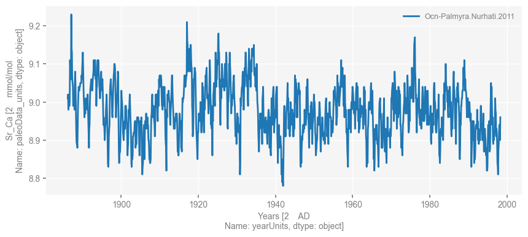
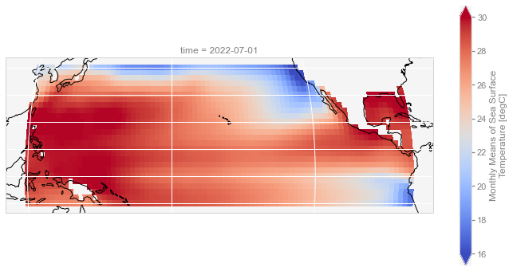
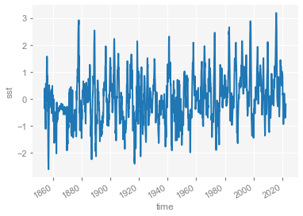
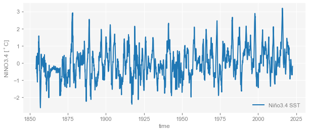
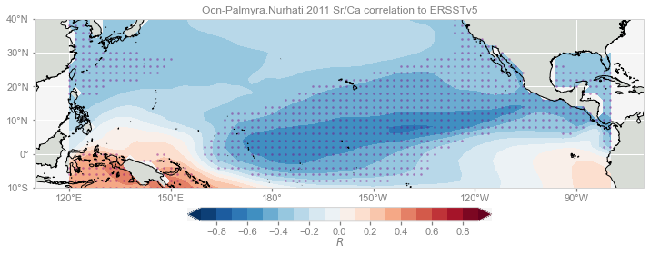
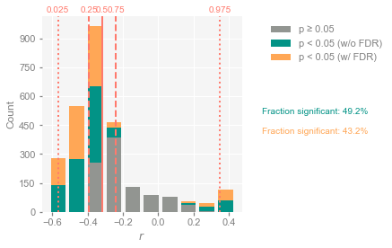
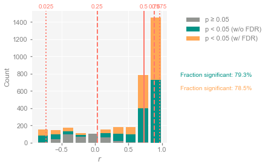
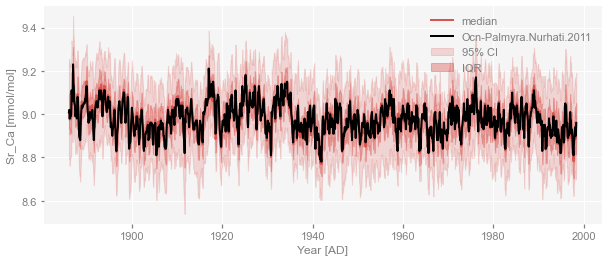
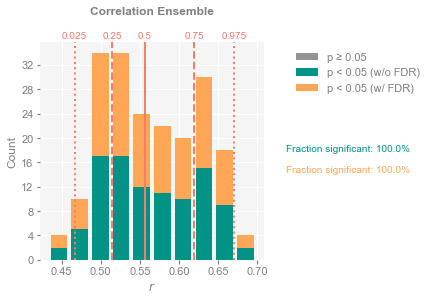
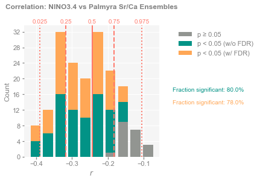

Correlations and their significance with Pyleoclim#
Preamble#
Introduction#
Correlation analysis, despite its simplicity and many shortcomings, remains a centerpiece of empirical analysis in many fields, particularly the paleosciences. Computing correlations is trivial enough; the difficulty lies in properly assessing their significance. Of particular importance are three considerations:
Persistence, which violates the standard assumption that the data are independent (which underlies most classical test of significance implemented, e.g. in Excel, Matlab or basic scipy).
Time irregularities, for instance comparing two records with different time axes, possibly unevenly spaced (which standard software cannot deal with out of the box)
Test multiplicity aka the “Look Elsewhere effect”, which states that repeatedly performing the same test can result in unacceptably high type I error (accepting correlations as significant, when in fact they are not). This arises e.g. when correlating a paleoclimate record with an instrumental field, assessing significance at thousands of grid points at once, or assessing significance within an age ensemble.
Accordingly, Pyleoclim facilitates an assessment of correlations that deals with all these cases, makes the necessary data transformations transparent to the user, and allows for one-line plot commands to visualize the results.
Goals#
In this notebook, we illustrate some of these capabilities with several simple scenarios, including:
Correlating a single
Seriesobject with another, with different time axesCorrelating a single
Seriesobject with a gridded field (usingMultipleSeries)Correlating a single
Seriesobject with aEnsembleSeriesCorrelating two
EnsembleSeriesobjects together
For a primer on these data structures, see the documentation.
Reading Time: 20 min
Keywords#
Correlations, Surrogates, Significance, Visualization
Pre-requisites#
This tutorial assumes basic knowledge of Python and the Series and MultipleSeries objects in Pyleoclim. If you are not familiar with this coding language, check out this tutorial: http://linked.earth/ec_workshops_py/. some basics statistics would be helpful, but are not strictly necessary to proceed.
Relevant Packages#
pyleoclim, matplotlib, xarray, cartopy
Data Description and Processing#
Coral Sr/Ca series (a proxy for sea-surface temperature) by Nurhati et al (2011). The data are from Palmyra Island in the tropical Pacific, at the edge of the NINO3.4 box (a popular measure of the state of El Niño Southern Oscillation).
Sea-surface temperature analysis of ERSSTv5 (Huang et al, 2017)
import pyleoclim as pyleo
pyleo.set_style('web')
import cartopy.crs as ccrs
import matplotlib.pyplot as plt
import xarray as xr
import numpy as np
First let’s load the coral data:
D = LiPD()
D.load('../data/Ocn-Palmyra.Nurhati.2011.lpd')
timeseries,df = D.get_timeseries(D.get_all_dataset_names(),to_dataframe=True)
df
Loading 1 LiPD files
100%|██████████| 1/1 [00:00<00:00, 63.50it/s]
Loaded..
Extracting timeseries from dataset: Ocn-Palmyra.Nurhati.2011 ...
| mode | time_id | geo_meanLon | geo_meanLat | geo_meanElev | geo_type | geo_siteName | geo_ocean | geo_pages2kRegion | hasUrl | ... | paleoData_variableName | paleoData_hasMinValue | paleoData_variableType | paleoData_values | paleoData_dataType | paleoData_description | paleoData_inferredVariableType | paleoData_pages2kID | paleoData_ocean2kID | paleoData_inCompilation | |
|---|---|---|---|---|---|---|---|---|---|---|---|---|---|---|---|---|---|---|---|---|---|
| 0 | paleoData | age | -162.13 | 5.87 | -10.0 | Feature | Palmyra | WP | Ocean | https://data.mint.isi.edu/files/lipd/Ocn-Palmy... | ... | d18O | -5.75 | measured | [-5.41, -5.47, -5.49, -5.43, -5.48, -5.53, -5.... | NaN | NaN | NaN | NaN | NaN | NaN |
| 1 | paleoData | age | -162.13 | 5.87 | -10.0 | Feature | Palmyra | WP | Ocean | https://data.mint.isi.edu/files/lipd/Ocn-Palmy... | ... | year | 1886.13 | inferred | [1998.29, 1998.21, 1998.13, 1998.04, 1997.96, ... | float | Year AD | Year | NaN | NaN | NaN |
| 2 | paleoData | age | -162.13 | 5.87 | -10.0 | Feature | Palmyra | WP | Ocean | https://data.mint.isi.edu/files/lipd/Ocn-Palmy... | ... | Sr_Ca | 8.78 | measured | [8.96, 8.9, 8.91, 8.94, 8.92, 8.89, 8.87, 8.81... | NaN | NaN | NaN | Ocn_129 | PacificNurhati2011 | Ocean2k_v1.0.0 |
| 3 | paleoData | age | -162.13 | 5.87 | -10.0 | Feature | Palmyra | WP | Ocean | https://data.mint.isi.edu/files/lipd/Ocn-Palmy... | ... | d18O | 0.07 | measured | [0.39, 0.35, 0.35, 0.35, 0.36, 0.22, 0.33, 0.3... | NaN | NaN | NaN | NaN | NaN | NaN |
| 4 | paleoData | age | -162.13 | 5.87 | -10.0 | Feature | Palmyra | WP | Ocean | https://data.mint.isi.edu/files/lipd/Ocn-Palmy... | ... | year | 1886.13 | inferred | [1998.21, 1998.13, 1998.04, 1997.96, 1997.88, ... | float | Year AD | Year | NaN | NaN | NaN |
5 rows × 93 columns
row = df[df['paleoData_variableName']=='Sr_Ca']
srca = pyleo.Series(
time=row['year'].values[0],
value=row['paleoData_values'].values[0],
time_name = 'Years',
time_unit = row['yearUnits'],
value_name = 'Sr_Ca',
value_unit = row['paleoData_units'],
label='Ocn-Palmyra.Nurhati.2011'
) # load only the Sr/Ca observations
srca.plot()
Time axis values sorted in ascending order
(<Figure size 1000x400 with 1 Axes>,
<Axes: xlabel='Years [2 AD\nName: yearUnits, dtype: object]', ylabel='Sr_Ca [2 mmol/mol\nName: paleoData_units, dtype: object]'>)

Next we load the ERSSTv5 data. Note that the actual dat are not being transferred over the network yet; all we are getting is a pointer towards a netCDF file on a NOAA THREDDS server. The real crunching will come later.
filepath = 'https://psl.noaa.gov/thredds/dodsC/Datasets/noaa.ersst.v5/sst.mnmean.nc'
ersstv5 = xr.open_dataset(filepath)
ersstv5
<xarray.Dataset>
Dimensions: (lat: 89, lon: 180, time: 2023, nbnds: 2)
Coordinates:
* lat (lat) float32 88.0 86.0 84.0 82.0 ... -82.0 -84.0 -86.0 -88.0
* lon (lon) float32 0.0 2.0 4.0 6.0 8.0 ... 352.0 354.0 356.0 358.0
* time (time) datetime64[ns] 1854-01-01 1854-02-01 ... 2022-07-01
Dimensions without coordinates: nbnds
Data variables:
time_bnds (time, nbnds) float64 9.969e+36 9.969e+36 ... 9.969e+36 9.969e+36
sst (time, lat, lon) float32 ...
Attributes: (12/38)
climatology: Climatology is based on 1971-2000 SST, X...
description: In situ data: ICOADS2.5 before 2007 and ...
keywords_vocabulary: NASA Global Change Master Directory (GCM...
keywords: Earth Science > Oceans > Ocean Temperatu...
instrument: Conventional thermometers
source_comment: SSTs were observed by conventional therm...
... ...
license: No constraints on data access or use
comment: SSTs were observed by conventional therm...
summary: ERSST.v5 is developed based on v4 after ...
dataset_title: NOAA Extended Reconstructed SST V5
data_modified: 2022-08-07
DODS_EXTRA.Unlimited_Dimension: time- lat: 89
- lon: 180
- time: 2023
- nbnds: 2
- lat(lat)float3288.0 86.0 84.0 ... -86.0 -88.0
- units :
- degrees_north
- long_name :
- Latitude
- actual_range :
- [ 88. -88.]
- standard_name :
- latitude
- axis :
- Y
- coordinate_defines :
- center
array([ 88., 86., 84., 82., 80., 78., 76., 74., 72., 70., 68., 66., 64., 62., 60., 58., 56., 54., 52., 50., 48., 46., 44., 42., 40., 38., 36., 34., 32., 30., 28., 26., 24., 22., 20., 18., 16., 14., 12., 10., 8., 6., 4., 2., 0., -2., -4., -6., -8., -10., -12., -14., -16., -18., -20., -22., -24., -26., -28., -30., -32., -34., -36., -38., -40., -42., -44., -46., -48., -50., -52., -54., -56., -58., -60., -62., -64., -66., -68., -70., -72., -74., -76., -78., -80., -82., -84., -86., -88.], dtype=float32) - lon(lon)float320.0 2.0 4.0 ... 354.0 356.0 358.0
- units :
- degrees_east
- long_name :
- Longitude
- actual_range :
- [ 0. 358.]
- standard_name :
- longitude
- axis :
- X
- coordinate_defines :
- center
array([ 0., 2., 4., 6., 8., 10., 12., 14., 16., 18., 20., 22., 24., 26., 28., 30., 32., 34., 36., 38., 40., 42., 44., 46., 48., 50., 52., 54., 56., 58., 60., 62., 64., 66., 68., 70., 72., 74., 76., 78., 80., 82., 84., 86., 88., 90., 92., 94., 96., 98., 100., 102., 104., 106., 108., 110., 112., 114., 116., 118., 120., 122., 124., 126., 128., 130., 132., 134., 136., 138., 140., 142., 144., 146., 148., 150., 152., 154., 156., 158., 160., 162., 164., 166., 168., 170., 172., 174., 176., 178., 180., 182., 184., 186., 188., 190., 192., 194., 196., 198., 200., 202., 204., 206., 208., 210., 212., 214., 216., 218., 220., 222., 224., 226., 228., 230., 232., 234., 236., 238., 240., 242., 244., 246., 248., 250., 252., 254., 256., 258., 260., 262., 264., 266., 268., 270., 272., 274., 276., 278., 280., 282., 284., 286., 288., 290., 292., 294., 296., 298., 300., 302., 304., 306., 308., 310., 312., 314., 316., 318., 320., 322., 324., 326., 328., 330., 332., 334., 336., 338., 340., 342., 344., 346., 348., 350., 352., 354., 356., 358.], dtype=float32) - time(time)datetime64[ns]1854-01-01 ... 2022-07-01
- long_name :
- Time
- delta_t :
- 0000-01-00 00:00:00
- avg_period :
- 0000-01-00 00:00:00
- prev_avg_period :
- 0000-00-07 00:00:00
- standard_name :
- time
- axis :
- T
- actual_range :
- [19723. 81265.]
- _ChunkSizes :
- 1
array(['1854-01-01T00:00:00.000000000', '1854-02-01T00:00:00.000000000', '1854-03-01T00:00:00.000000000', ..., '2022-05-01T00:00:00.000000000', '2022-06-01T00:00:00.000000000', '2022-07-01T00:00:00.000000000'], dtype='datetime64[ns]')
- time_bnds(time, nbnds)float64...
- long_name :
- Time Boundaries
- _ChunkSizes :
- [1 2]
array([[9.96921e+36, 9.96921e+36], [9.96921e+36, 9.96921e+36], [9.96921e+36, 9.96921e+36], ..., [9.96921e+36, 9.96921e+36], [9.96921e+36, 9.96921e+36], [9.96921e+36, 9.96921e+36]]) - sst(time, lat, lon)float32...
- long_name :
- Monthly Means of Sea Surface Temperature
- units :
- degC
- var_desc :
- Sea Surface Temperature
- level_desc :
- Surface
- statistic :
- Mean
- dataset :
- NOAA Extended Reconstructed SST V5
- parent_stat :
- Individual Values
- actual_range :
- [-1.8 42.32636]
- valid_range :
- [-1.8 45. ]
- _ChunkSizes :
- [ 1 89 180]
[32408460 values with dtype=float32]
- climatology :
- Climatology is based on 1971-2000 SST, Xue, Y., T. M. Smith, and R. W. Reynolds, 2003: Interdecadal changes of 30-yr SST normals during 1871.2000. Journal of Climate, 16, 1601-1612.
- description :
- In situ data: ICOADS2.5 before 2007 and NCEP in situ data from 2008 to present. Ice data: HadISST ice before 2010 and NCEP ice after 2010.
- keywords_vocabulary :
- NASA Global Change Master Directory (GCMD) Science Keywords
- keywords :
- Earth Science > Oceans > Ocean Temperature > Sea Surface Temperature >
- instrument :
- Conventional thermometers
- source_comment :
- SSTs were observed by conventional thermometers in Buckets (insulated or un-insulated canvas and wooded buckets) or Engine Room Intaker
- geospatial_lon_min :
- -1.0
- geospatial_lon_max :
- 359.0
- geospatial_laty_max :
- 89.0
- geospatial_laty_min :
- -89.0
- geospatial_lat_max :
- 89.0
- geospatial_lat_min :
- -89.0
- geospatial_lat_units :
- degrees_north
- geospatial_lon_units :
- degrees_east
- cdm_data_type :
- Grid
- project :
- NOAA Extended Reconstructed Sea Surface Temperature (ERSST)
- original_publisher_url :
- http://www.ncdc.noaa.gov
- References :
- https://www.ncdc.noaa.gov/data-access/marineocean-data/extended-reconstructed-sea-surface-temperature-ersst-v5 at NCEI and http://www.esrl.noaa.gov/psd/data/gridded/data.noaa.ersst.v5.html
- source :
- In situ data: ICOADS R3.0 before 2015, NCEP in situ GTS from 2016 to present, and Argo SST from 1999 to present. Ice data: HadISST2 ice before 2015, and NCEP ice after 2015
- title :
- NOAA ERSSTv5 (in situ only)
- history :
- created 07/2017 by PSD data using NCEI's ERSST V5 NetCDF values
- institution :
- This version written at NOAA/ESRL PSD: obtained from NOAA/NESDIS/National Centers for Environmental Information and time aggregated. Original Full Source: NOAA/NESDIS/NCEI/CCOG
- citation :
- Huang et al, 2017: Extended Reconstructed Sea Surface Temperatures Version 5 (ERSSTv5): Upgrades, Validations, and Intercomparisons. Journal of Climate, https://doi.org/10.1175/JCLI-D-16-0836.1
- platform :
- Ship and Buoy SSTs from ICOADS R3.0 and NCEP GTS
- standard_name_vocabulary :
- CF Standard Name Table (v40, 25 January 2017)
- processing_level :
- NOAA Level 4
- Conventions :
- CF-1.6, ACDD-1.3
- metadata_link :
- :metadata_link = https://doi.org/10.7289/V5T72FNM (original format)
- creator_name :
- Boyin Huang (original)
- date_created :
- 2017-06-30T12:18:00Z (original)
- product_version :
- Version 5
- creator_url_original :
- https://www.ncei.noaa.gov
- license :
- No constraints on data access or use
- comment :
- SSTs were observed by conventional thermometers in Buckets (insulated or un-insulated canvas and wooded buckets), Engine Room Intakers, or floats and drifters
- summary :
- ERSST.v5 is developed based on v4 after revisions of 8 parameters using updated data sets and advanced knowledge of ERSST analysis
- dataset_title :
- NOAA Extended Reconstructed SST V5
- data_modified :
- 2022-08-07
- DODS_EXTRA.Unlimited_Dimension :
- time
Let’s select a smaller portion of this dataset to correlate with the Sr/Ca record:
ersstv5_tp = ersstv5.sel(lat=slice(40, -10), lon=slice(120, 280))
ersstv5_tp
<xarray.Dataset>
Dimensions: (lat: 26, lon: 81, time: 2023, nbnds: 2)
Coordinates:
* lat (lat) float32 40.0 38.0 36.0 34.0 32.0 ... -4.0 -6.0 -8.0 -10.0
* lon (lon) float32 120.0 122.0 124.0 126.0 ... 274.0 276.0 278.0 280.0
* time (time) datetime64[ns] 1854-01-01 1854-02-01 ... 2022-07-01
Dimensions without coordinates: nbnds
Data variables:
time_bnds (time, nbnds) float64 9.969e+36 9.969e+36 ... 9.969e+36 9.969e+36
sst (time, lat, lon) float32 ...
Attributes: (12/38)
climatology: Climatology is based on 1971-2000 SST, X...
description: In situ data: ICOADS2.5 before 2007 and ...
keywords_vocabulary: NASA Global Change Master Directory (GCM...
keywords: Earth Science > Oceans > Ocean Temperatu...
instrument: Conventional thermometers
source_comment: SSTs were observed by conventional therm...
... ...
license: No constraints on data access or use
comment: SSTs were observed by conventional therm...
summary: ERSST.v5 is developed based on v4 after ...
dataset_title: NOAA Extended Reconstructed SST V5
data_modified: 2022-08-07
DODS_EXTRA.Unlimited_Dimension: time- lat: 26
- lon: 81
- time: 2023
- nbnds: 2
- lat(lat)float3240.0 38.0 36.0 ... -6.0 -8.0 -10.0
- units :
- degrees_north
- long_name :
- Latitude
- actual_range :
- [ 88. -88.]
- standard_name :
- latitude
- axis :
- Y
- coordinate_defines :
- center
array([ 40., 38., 36., 34., 32., 30., 28., 26., 24., 22., 20., 18., 16., 14., 12., 10., 8., 6., 4., 2., 0., -2., -4., -6., -8., -10.], dtype=float32) - lon(lon)float32120.0 122.0 124.0 ... 278.0 280.0
- units :
- degrees_east
- long_name :
- Longitude
- actual_range :
- [ 0. 358.]
- standard_name :
- longitude
- axis :
- X
- coordinate_defines :
- center
array([120., 122., 124., 126., 128., 130., 132., 134., 136., 138., 140., 142., 144., 146., 148., 150., 152., 154., 156., 158., 160., 162., 164., 166., 168., 170., 172., 174., 176., 178., 180., 182., 184., 186., 188., 190., 192., 194., 196., 198., 200., 202., 204., 206., 208., 210., 212., 214., 216., 218., 220., 222., 224., 226., 228., 230., 232., 234., 236., 238., 240., 242., 244., 246., 248., 250., 252., 254., 256., 258., 260., 262., 264., 266., 268., 270., 272., 274., 276., 278., 280.], dtype=float32) - time(time)datetime64[ns]1854-01-01 ... 2022-07-01
- long_name :
- Time
- delta_t :
- 0000-01-00 00:00:00
- avg_period :
- 0000-01-00 00:00:00
- prev_avg_period :
- 0000-00-07 00:00:00
- standard_name :
- time
- axis :
- T
- actual_range :
- [19723. 81265.]
- _ChunkSizes :
- 1
array(['1854-01-01T00:00:00.000000000', '1854-02-01T00:00:00.000000000', '1854-03-01T00:00:00.000000000', ..., '2022-05-01T00:00:00.000000000', '2022-06-01T00:00:00.000000000', '2022-07-01T00:00:00.000000000'], dtype='datetime64[ns]')
- time_bnds(time, nbnds)float649.969e+36 9.969e+36 ... 9.969e+36
- long_name :
- Time Boundaries
- _ChunkSizes :
- [1 2]
array([[9.96921e+36, 9.96921e+36], [9.96921e+36, 9.96921e+36], [9.96921e+36, 9.96921e+36], ..., [9.96921e+36, 9.96921e+36], [9.96921e+36, 9.96921e+36], [9.96921e+36, 9.96921e+36]]) - sst(time, lat, lon)float32...
- long_name :
- Monthly Means of Sea Surface Temperature
- units :
- degC
- var_desc :
- Sea Surface Temperature
- level_desc :
- Surface
- statistic :
- Mean
- dataset :
- NOAA Extended Reconstructed SST V5
- parent_stat :
- Individual Values
- actual_range :
- [-1.8 42.32636]
- valid_range :
- [-1.8 45. ]
- _ChunkSizes :
- [ 1 89 180]
[4260438 values with dtype=float32]
- climatology :
- Climatology is based on 1971-2000 SST, Xue, Y., T. M. Smith, and R. W. Reynolds, 2003: Interdecadal changes of 30-yr SST normals during 1871.2000. Journal of Climate, 16, 1601-1612.
- description :
- In situ data: ICOADS2.5 before 2007 and NCEP in situ data from 2008 to present. Ice data: HadISST ice before 2010 and NCEP ice after 2010.
- keywords_vocabulary :
- NASA Global Change Master Directory (GCMD) Science Keywords
- keywords :
- Earth Science > Oceans > Ocean Temperature > Sea Surface Temperature >
- instrument :
- Conventional thermometers
- source_comment :
- SSTs were observed by conventional thermometers in Buckets (insulated or un-insulated canvas and wooded buckets) or Engine Room Intaker
- geospatial_lon_min :
- -1.0
- geospatial_lon_max :
- 359.0
- geospatial_laty_max :
- 89.0
- geospatial_laty_min :
- -89.0
- geospatial_lat_max :
- 89.0
- geospatial_lat_min :
- -89.0
- geospatial_lat_units :
- degrees_north
- geospatial_lon_units :
- degrees_east
- cdm_data_type :
- Grid
- project :
- NOAA Extended Reconstructed Sea Surface Temperature (ERSST)
- original_publisher_url :
- http://www.ncdc.noaa.gov
- References :
- https://www.ncdc.noaa.gov/data-access/marineocean-data/extended-reconstructed-sea-surface-temperature-ersst-v5 at NCEI and http://www.esrl.noaa.gov/psd/data/gridded/data.noaa.ersst.v5.html
- source :
- In situ data: ICOADS R3.0 before 2015, NCEP in situ GTS from 2016 to present, and Argo SST from 1999 to present. Ice data: HadISST2 ice before 2015, and NCEP ice after 2015
- title :
- NOAA ERSSTv5 (in situ only)
- history :
- created 07/2017 by PSD data using NCEI's ERSST V5 NetCDF values
- institution :
- This version written at NOAA/ESRL PSD: obtained from NOAA/NESDIS/National Centers for Environmental Information and time aggregated. Original Full Source: NOAA/NESDIS/NCEI/CCOG
- citation :
- Huang et al, 2017: Extended Reconstructed Sea Surface Temperatures Version 5 (ERSSTv5): Upgrades, Validations, and Intercomparisons. Journal of Climate, https://doi.org/10.1175/JCLI-D-16-0836.1
- platform :
- Ship and Buoy SSTs from ICOADS R3.0 and NCEP GTS
- standard_name_vocabulary :
- CF Standard Name Table (v40, 25 January 2017)
- processing_level :
- NOAA Level 4
- Conventions :
- CF-1.6, ACDD-1.3
- metadata_link :
- :metadata_link = https://doi.org/10.7289/V5T72FNM (original format)
- creator_name :
- Boyin Huang (original)
- date_created :
- 2017-06-30T12:18:00Z (original)
- product_version :
- Version 5
- creator_url_original :
- https://www.ncei.noaa.gov
- license :
- No constraints on data access or use
- comment :
- SSTs were observed by conventional thermometers in Buckets (insulated or un-insulated canvas and wooded buckets), Engine Room Intakers, or floats and drifters
- summary :
- ERSST.v5 is developed based on v4 after revisions of 8 parameters using updated data sets and advanced knowledge of ERSST analysis
- dataset_title :
- NOAA Extended Reconstructed SST V5
- data_modified :
- 2022-08-07
- DODS_EXTRA.Unlimited_Dimension :
- time
And let’s plot that domain:
fig = plt.figure(figsize=(12, 6))
ax = plt.axes(projection=ccrs.Robinson(central_longitude=180))
ax.coastlines()
ax.gridlines()
ersstv5_tp.sst.isel(time=-1).plot(
ax=ax, transform=ccrs.PlateCarree(), vmin=16, vmax=30, cmap='coolwarm'
)
<cartopy.mpl.geocollection.GeoQuadMesh at 0x16896f4c0>

Now extract the NINO3.4 index:
nino34_box = ersstv5_tp.sel(lat=slice(5, -5), lon=slice(190, 240))
gb = nino34_box.sst.groupby('time.month')
nino34_anom = gb - gb.mean(dim='time')
weights = np.cos(np.deg2rad(nino34_box.lat))
nino34 = nino34_anom.weighted(weights).mean(dim=['lat', 'lon'])
nino34.plot()
[<matplotlib.lines.Line2D at 0x168ee9b80>]

The date format is datetime64, which is not understood by Pyleoclim. We thus need to transform it to decimal years, thanks to this little trick.
dates = nino34['time'].values
years = dates.astype('datetime64[Y]').astype(int) + 1970
months = dates.astype('datetime64[M]').astype(int) % 12 + 1
decimal_year = years + months/12.0
nino34ts = pyleo.Series(time = decimal_year, value = nino34.values, value_name='NINO3.4',
value_unit= '$^\circ$C', label='Niño3.4 SST')
nino34ts.plot()
(<Figure size 720x288 with 1 Axes>,
<AxesSubplot:xlabel='time', ylabel='NINO3.4 [$^\\circ$C]'>)

Now we can compute correlations between the Nurhati et al (2011) Sr/Ca dataset and NINO3.4.
Demonstration#
The Corr object#
corr1a = srca.correlation(nino34ts)
print(corr1a)
correlation p-value signif. (α: 0.05)
------------- --------- -------------------
-0.443165 < 1e-6 True
The output of correlation() is a Corr object, which is set up so that the standard print() function that nicely formats the P-value and lets you know if it is significant or not. In this case, a value of \(10^{-6}\) means that the observed correlation of -0.44 is larger (in absolute value) than expected from the vast majority of samples under the null hypothesis.
Also, note that the correlation() method is symmetric, as corr(A,B) = corr(B,A):
corr1b = nino34ts.correlation(srca)
print(corr1b)
correlation p-value signif. (α: 0.05)
------------- --------- -------------------
-0.443165 < 1e-6 True
Pairwise Correlations Three Ways#
What does “significant” mean here? Pyleoclim support 3 null models for this significance assessment:
a parametric T-test adjusted for the effect of autocorrelation (
ttest)a Monte Carlo test against surrogate series that have the same persistence properties as the original series (
isopersistent)a Monte Carlo test against surrogate series that have the same spectrum as the original series (
isospectral; this is the default)
The standard null model for correlations in the statistical literature is a Student’s t test, which assumes that the data are IID. The independence assumption is often violated by the persistence of most climate timeseries, particularly the ones shown above. pyleoclim thus implements a modified version of the classical T-test, one that adjusts for the loss of degrees of freedom due to persistence as per Dawdy & Matalas (1964):
corr1t = srca.correlation(nino34ts, settings={'method':'ttest'})
print(corr1t)
correlation p-value signif. (α: 0.05)
------------- --------- -------------------
-0.443165 < 1e-6 True
corr1_isopersist = srca.correlation(nino34ts, settings={'method':'isopersistent'}, seed = 2333)
print(corr1_isopersist)
correlation p-value signif. (α: 0.05)
------------- --------- -------------------
-0.443165 < 1e-41 True
Because this is a simulation-based method, the result will depent on the number of simulations, nsim. Upping nsim ensures more consistent results, though in this case the result does not change:
corr1_isopersist = srca.correlation(nino34ts, settings={'method':'isopersistent','nsim': 5000}, seed = 2333)
print(corr1_isopersist)
correlation p-value signif. (α: 0.05)
------------- --------- -------------------
-0.443165 < 1e-58 True
We see that the p-value changes subtly between these two cases, but not enough to change the result (the correlation is significant either way). However, to ensure that these sampling issues won’t affect the reproducibility of the results, we specify a random seed. Note that the difference between “significant” and “not significant” p-values is not itself statistically significant (Gelman & Stern, 2006).
The last null model method is isospectral, which phase-randomizes the original signals, thereby preserving the spectrum of each series but scrambling phase relations between the signals. This (non-paramettric) method was first proposed by Ebisuzaki (1997), and is called isospectral because it leaves the spectrum (and therefore the autocorrelation function) intact. Since, this is also a simulation method, one can also play with the number of simulations, as done here:
corr1_isospec = srca.correlation(nino34ts, settings={'method':'isospectral','nsim': 5000}, seed = 4343)
print(corr1_isospec)
correlation p-value signif. (α: 0.05)
------------- --------- -------------------
-0.443165 < 1e-6 True
We see that this resulted is a modestly different p-value, but again one far below 5%, which leads to rejection of the null hypothesis (the correlation is deemed significant at the 5% level, and would pass that test for much lower \(\alpha\) levels as well). Because it makes the fewest assumptions, this is the default method.
In this case, the three methods concur that the correlation is significant; this may not always be the case, so we encourage users to play with these methods in case they obtain p-values close to the test level, to discourage p-hacking temptations.
Field correlations#
The previous section shows how to properly assess significance between two series. The situation becomes more complex as one conducts a similar test between a paleoclimate timeseries and collection of series, for instance coming from a gridded field. To see why, let us recursively carry out the same test as above at all ERSSTv5 North Pacific grid points. For this, we need not only to loop over grid points, but also store the p-values for later analysis.
ersstv5_tp
<xarray.Dataset>
Dimensions: (lat: 26, lon: 81, time: 2023, nbnds: 2)
Coordinates:
* lat (lat) float32 40.0 38.0 36.0 34.0 32.0 ... -4.0 -6.0 -8.0 -10.0
* lon (lon) float32 120.0 122.0 124.0 126.0 ... 274.0 276.0 278.0 280.0
* time (time) datetime64[ns] 1854-01-01 1854-02-01 ... 2022-07-01
Dimensions without coordinates: nbnds
Data variables:
time_bnds (time, nbnds) float64 9.969e+36 9.969e+36 ... 9.969e+36 9.969e+36
sst (time, lat, lon) float32 ...
Attributes: (12/38)
climatology: Climatology is based on 1971-2000 SST, X...
description: In situ data: ICOADS2.5 before 2007 and ...
keywords_vocabulary: NASA Global Change Master Directory (GCM...
keywords: Earth Science > Oceans > Ocean Temperatu...
instrument: Conventional thermometers
source_comment: SSTs were observed by conventional therm...
... ...
license: No constraints on data access or use
comment: SSTs were observed by conventional therm...
summary: ERSST.v5 is developed based on v4 after ...
dataset_title: NOAA Extended Reconstructed SST V5
data_modified: 2022-08-07
DODS_EXTRA.Unlimited_Dimension: time- lat: 26
- lon: 81
- time: 2023
- nbnds: 2
- lat(lat)float3240.0 38.0 36.0 ... -6.0 -8.0 -10.0
- units :
- degrees_north
- long_name :
- Latitude
- actual_range :
- [ 88. -88.]
- standard_name :
- latitude
- axis :
- Y
- coordinate_defines :
- center
array([ 40., 38., 36., 34., 32., 30., 28., 26., 24., 22., 20., 18., 16., 14., 12., 10., 8., 6., 4., 2., 0., -2., -4., -6., -8., -10.], dtype=float32) - lon(lon)float32120.0 122.0 124.0 ... 278.0 280.0
- units :
- degrees_east
- long_name :
- Longitude
- actual_range :
- [ 0. 358.]
- standard_name :
- longitude
- axis :
- X
- coordinate_defines :
- center
array([120., 122., 124., 126., 128., 130., 132., 134., 136., 138., 140., 142., 144., 146., 148., 150., 152., 154., 156., 158., 160., 162., 164., 166., 168., 170., 172., 174., 176., 178., 180., 182., 184., 186., 188., 190., 192., 194., 196., 198., 200., 202., 204., 206., 208., 210., 212., 214., 216., 218., 220., 222., 224., 226., 228., 230., 232., 234., 236., 238., 240., 242., 244., 246., 248., 250., 252., 254., 256., 258., 260., 262., 264., 266., 268., 270., 272., 274., 276., 278., 280.], dtype=float32) - time(time)datetime64[ns]1854-01-01 ... 2022-07-01
- long_name :
- Time
- delta_t :
- 0000-01-00 00:00:00
- avg_period :
- 0000-01-00 00:00:00
- prev_avg_period :
- 0000-00-07 00:00:00
- standard_name :
- time
- axis :
- T
- actual_range :
- [19723. 81265.]
- _ChunkSizes :
- 1
array(['1854-01-01T00:00:00.000000000', '1854-02-01T00:00:00.000000000', '1854-03-01T00:00:00.000000000', ..., '2022-05-01T00:00:00.000000000', '2022-06-01T00:00:00.000000000', '2022-07-01T00:00:00.000000000'], dtype='datetime64[ns]')
- time_bnds(time, nbnds)float649.969e+36 9.969e+36 ... 9.969e+36
- long_name :
- Time Boundaries
- _ChunkSizes :
- [1 2]
array([[9.96921e+36, 9.96921e+36], [9.96921e+36, 9.96921e+36], [9.96921e+36, 9.96921e+36], ..., [9.96921e+36, 9.96921e+36], [9.96921e+36, 9.96921e+36], [9.96921e+36, 9.96921e+36]]) - sst(time, lat, lon)float32...
- long_name :
- Monthly Means of Sea Surface Temperature
- units :
- degC
- var_desc :
- Sea Surface Temperature
- level_desc :
- Surface
- statistic :
- Mean
- dataset :
- NOAA Extended Reconstructed SST V5
- parent_stat :
- Individual Values
- actual_range :
- [-1.8 42.32636]
- valid_range :
- [-1.8 45. ]
- _ChunkSizes :
- [ 1 89 180]
[4260438 values with dtype=float32]
- climatology :
- Climatology is based on 1971-2000 SST, Xue, Y., T. M. Smith, and R. W. Reynolds, 2003: Interdecadal changes of 30-yr SST normals during 1871.2000. Journal of Climate, 16, 1601-1612.
- description :
- In situ data: ICOADS2.5 before 2007 and NCEP in situ data from 2008 to present. Ice data: HadISST ice before 2010 and NCEP ice after 2010.
- keywords_vocabulary :
- NASA Global Change Master Directory (GCMD) Science Keywords
- keywords :
- Earth Science > Oceans > Ocean Temperature > Sea Surface Temperature >
- instrument :
- Conventional thermometers
- source_comment :
- SSTs were observed by conventional thermometers in Buckets (insulated or un-insulated canvas and wooded buckets) or Engine Room Intaker
- geospatial_lon_min :
- -1.0
- geospatial_lon_max :
- 359.0
- geospatial_laty_max :
- 89.0
- geospatial_laty_min :
- -89.0
- geospatial_lat_max :
- 89.0
- geospatial_lat_min :
- -89.0
- geospatial_lat_units :
- degrees_north
- geospatial_lon_units :
- degrees_east
- cdm_data_type :
- Grid
- project :
- NOAA Extended Reconstructed Sea Surface Temperature (ERSST)
- original_publisher_url :
- http://www.ncdc.noaa.gov
- References :
- https://www.ncdc.noaa.gov/data-access/marineocean-data/extended-reconstructed-sea-surface-temperature-ersst-v5 at NCEI and http://www.esrl.noaa.gov/psd/data/gridded/data.noaa.ersst.v5.html
- source :
- In situ data: ICOADS R3.0 before 2015, NCEP in situ GTS from 2016 to present, and Argo SST from 1999 to present. Ice data: HadISST2 ice before 2015, and NCEP ice after 2015
- title :
- NOAA ERSSTv5 (in situ only)
- history :
- created 07/2017 by PSD data using NCEI's ERSST V5 NetCDF values
- institution :
- This version written at NOAA/ESRL PSD: obtained from NOAA/NESDIS/National Centers for Environmental Information and time aggregated. Original Full Source: NOAA/NESDIS/NCEI/CCOG
- citation :
- Huang et al, 2017: Extended Reconstructed Sea Surface Temperatures Version 5 (ERSSTv5): Upgrades, Validations, and Intercomparisons. Journal of Climate, https://doi.org/10.1175/JCLI-D-16-0836.1
- platform :
- Ship and Buoy SSTs from ICOADS R3.0 and NCEP GTS
- standard_name_vocabulary :
- CF Standard Name Table (v40, 25 January 2017)
- processing_level :
- NOAA Level 4
- Conventions :
- CF-1.6, ACDD-1.3
- metadata_link :
- :metadata_link = https://doi.org/10.7289/V5T72FNM (original format)
- creator_name :
- Boyin Huang (original)
- date_created :
- 2017-06-30T12:18:00Z (original)
- product_version :
- Version 5
- creator_url_original :
- https://www.ncei.noaa.gov
- license :
- No constraints on data access or use
- comment :
- SSTs were observed by conventional thermometers in Buckets (insulated or un-insulated canvas and wooded buckets), Engine Room Intakers, or floats and drifters
- summary :
- ERSST.v5 is developed based on v4 after revisions of 8 parameters using updated data sets and advanced knowledge of ERSST analysis
- dataset_title :
- NOAA Extended Reconstructed SST V5
- data_modified :
- 2022-08-07
- DODS_EXTRA.Unlimited_Dimension :
- time
%%time
nlon = len(ersstv5_tp['lon'])
nlat = len(ersstv5_tp['lat'])
pval = np.empty((nlon,nlat)) # declare array to store pvalues
corr = np.empty_like(pval) # declare empty array of identical shape
slon, slat = [], [];
sst_list = [] # initialize empty list
alpha = 0.05
for ji in range(nlon):
print("Computing correlations at " + str(ersstv5_tp.lon[ji].values) + 'E')
for jj in range(nlat):
st = ersstv5_tp['sst'][:,jj,ji]
# locate valid ocean points
noNaNs = len(np.where(np.isnan(st) == False)[0]) # number of valid years
sstvar = st.var() # variance
if noNaNs >= 100 and sstvar >= 0.01:
sttb = pyleo.Series(time=decimal_year,
time_unit = 'year CE',
value = st.values, #st_annual.values,
value_unit = 'C',clean_ts=False)
sst_list.append(sttb)
corr_res = sttb.correlation(srca, settings={'method':'isospectral','nsim':200},seed=333)
pval[ji,jj] = corr_res.p
corr[ji,jj] = corr_res.r
if pval[ji,jj] < alpha:
slon.append(ersstv5_tp.lon[ji])
slat.append(ersstv5_tp.lat[jj])
else:
pval[ji,jj] = np.nan; corr[ji,jj] = np.nan
Computing correlations at 120.0E
Computing correlations at 122.0E
Computing correlations at 124.0E
Computing correlations at 126.0E
Computing correlations at 128.0E
Computing correlations at 130.0E
Computing correlations at 132.0E
Computing correlations at 134.0E
Computing correlations at 136.0E
Computing correlations at 138.0E
Computing correlations at 140.0E
Computing correlations at 142.0E
Computing correlations at 144.0E
Computing correlations at 146.0E
Computing correlations at 148.0E
Computing correlations at 150.0E
Computing correlations at 152.0E
Computing correlations at 154.0E
Computing correlations at 156.0E
Computing correlations at 158.0E
Computing correlations at 160.0E
Computing correlations at 162.0E
Computing correlations at 164.0E
Computing correlations at 166.0E
Computing correlations at 168.0E
Computing correlations at 170.0E
Computing correlations at 172.0E
Computing correlations at 174.0E
Computing correlations at 176.0E
Computing correlations at 178.0E
Computing correlations at 180.0E
Computing correlations at 182.0E
Computing correlations at 184.0E
Computing correlations at 186.0E
Computing correlations at 188.0E
Computing correlations at 190.0E
Computing correlations at 192.0E
Computing correlations at 194.0E
Computing correlations at 196.0E
Computing correlations at 198.0E
Computing correlations at 200.0E
Computing correlations at 202.0E
Computing correlations at 204.0E
Computing correlations at 206.0E
Computing correlations at 208.0E
Computing correlations at 210.0E
Computing correlations at 212.0E
Computing correlations at 214.0E
Computing correlations at 216.0E
Computing correlations at 218.0E
Computing correlations at 220.0E
Computing correlations at 222.0E
Computing correlations at 224.0E
Computing correlations at 226.0E
Computing correlations at 228.0E
Computing correlations at 230.0E
Computing correlations at 232.0E
Computing correlations at 234.0E
Computing correlations at 236.0E
Computing correlations at 238.0E
Computing correlations at 240.0E
Computing correlations at 242.0E
Computing correlations at 244.0E
Computing correlations at 246.0E
Computing correlations at 248.0E
Computing correlations at 250.0E
Computing correlations at 252.0E
Computing correlations at 254.0E
Computing correlations at 256.0E
Computing correlations at 258.0E
Computing correlations at 260.0E
Computing correlations at 262.0E
Computing correlations at 264.0E
Computing correlations at 266.0E
Computing correlations at 268.0E
Computing correlations at 270.0E
Computing correlations at 272.0E
Computing correlations at 274.0E
Computing correlations at 276.0E
Computing correlations at 278.0E
Computing correlations at 280.0E
CPU times: user 45min 24s, sys: 54.5 s, total: 46min 18s
Wall time: 37min 3s
pvals = pval.flatten() # make the p-value array a 1D one
nt = len(pvals)
print(str(nt)) # check on the final number
len(slon)
2106
911
import cartopy.crs as ccrs
import cartopy.feature as cfeature
from cartopy.mpl.ticker import LongitudeFormatter, LatitudeFormatter
import seaborn as sns
land_color=sns.xkcd_rgb['light grey']
latlon_range = (110, 290, -10, 40)
lon_min, lon_max, lat_min, lat_max = latlon_range
lon_ticks = np.arange(120, 330, 30)
lat_ticks = np.arange(-10, 50, 10)
# map
fig = plt.figure(figsize=[12, 8])
ax = plt.subplot(projection=ccrs.PlateCarree(central_longitude=180))
ax.add_feature(cfeature.LAND, facecolor=land_color, edgecolor=land_color)
ax.coastlines()
transform = ccrs.PlateCarree()
ax.set_extent(latlon_range, crs=transform)
lon_formatter = LongitudeFormatter(zero_direction_label=False)
lat_formatter = LatitudeFormatter()
ax.xaxis.set_major_formatter(lon_formatter)
ax.yaxis.set_major_formatter(lat_formatter)
mask_lon = (lon_ticks >= lon_min) & (lon_ticks <= lon_max)
mask_lat = (lat_ticks >= lat_min) & (lat_ticks <= lat_max)
ax.set_xticks(lon_ticks[mask_lon], crs=transform)
ax.set_yticks(lat_ticks[mask_lat], crs=transform)
# contour
clevs = np.linspace(-0.9, 0.9, 19)
im = ax.contourf(ersstv5_tp.lon, ersstv5_tp.lat, corr.T, clevs, transform=transform, cmap='RdBu_r', extend='both')
# significant points
plt.scatter(x=slon, y=slat, color="purple", s=3, alpha=0.3, transform=transform)
plt.title(srca.label +' Sr/Ca correlation to ERSSTv5')
# colorbar
#plt.rcParams['axes.grid'] = False # necessary in MPL 3.5.x https://github.com/matplotlib/matplotlib/issues/21723
cbar = fig.colorbar(im, ax=ax, pad=0.05, aspect=20, orientation = 'horizontal', fraction=0.15, shrink=0.5)
cbar.set_label(r'$R$', labelpad=-1)
/Users/deborahkhider/opt/anaconda3/envs/paleodev/lib/python3.9/site-packages/cartopy/io/__init__.py:241: DownloadWarning: Downloading: https://naciscdn.org/naturalearth/50m/physical/ne_50m_land.zip
warnings.warn('Downloading: {}'.format(url), DownloadWarning)

The purple dots on the map are the locations of the gridpoints where the p-values fall under 5%, and they naturally correspond to the regions of highest (absolute) correlations, here negative because of the well-known temperature-dependent substitution of trace elements in the crystal lattice: the Sr/Ca ratio decreases with increasing temperature. The pattern is reminiscent of the North Pacific Gyre Oscillation, as found in Nurhati et al (2011).
Are these correlations all “significant”, in the sense of being remarkable? Here we must account for the Multiple Hypothesis problem, otherwise known as the “look elsewhere” effect. Conducting tests at the 5% level (what most people would call “the 95% confidence level”) specifically means that we expect 5% of our tests to return spurious results, just from chance alone (the so-called “type I error”). We just carried out 2083 tests, so we expect \(0.05*327 \approx 104 \) of those results to be false positives, right out of the gate. So which of the 989 tests labeled as significant can we trust?
One solution to this is the False Discovery Rate (aka FDR), which was devised in a celebrated paper (Benjamini & Hochberg, 1995). The idea is to look not just for the p-values under 5% (purple dots in the figure above), but for the fraction of those under the \(0.05*i/m\), which guards against the false discoveries one expects out of repeatedly testing the same hypothesis over and over again.
The idea is as follows: a multiple testing procedure returns a list of \(p\)-values. With the traditional false positive test, the significance level \(\alpha=0.05\) is refered as the false positive rate (FPR), and we reject null hypothesis \(H_0\) at all locations \(p_i < \alpha\). In the original BH95 method, the nominal FDR, denoted by \(q\), is defined as the rate we are willing to allow of false rejections out of all rejections, and is usually set to \(5\%\). The BH95 procedure rejects \(H_0\) in all cases \(i\) for which \(p_i \le p_k\), where \(k = \max_{i=0,...,n} \{i: p_{(i)}\le q i/n \}\). For an illustration, see Fig 2 of Hu et al (2017).
To access this functionality in pyleoclim , simply invoke:
fdr_res = pyleo.utils.correlation.fdr(pvals)
len(fdr_res)
765
fdr_res is a list of indices of the grid points in question, which could be mapped. In this case, it’s obvious that many gridpoints pass the test, so we can be confident that the record contains much information about temperature variability (analyzing exactly how and why is not the purpose of this notebook). There would be another way to approach the question of field correlations: if we correlate the srca Series object with a MultipleSeries object made up of the various grid point series. If you notice the loop above, we stashed each series into a variable called sst_list, which we can use now:
sstMS = pyleo.MultipleSeries(sst_list)
corrMS = sstMS.correlation(srca,settings={'method':'isospectral','nsim':1000},seed=333)
Looping over 1934 Series in collection
100%|███████████████████████████████████████| 1934/1934 [14:42<00:00, 2.19it/s]
type(corrMS)
pyleoclim.core.correns.CorrEns
The result is now a CorrEns object, which has an additional plot() method:
fig, ax = corrMS.plot()
corrMS.signif_fdr.count(True)
836

The gray bars indicate non-significant correlations, which tend to have low absolute values. Green bars locate all correlations with an associated p-value lower than 5% ; orange bars locate the fraction of those that pass the False Discovery Rate criterion (the 868 locales identified above). In addition to the plot() method used in the previous cell, this CorrEns object also has a print() method, which formats the results nicely:
print(corrMS)
correlation p-value signif. w/o FDR (α: 0.05) signif. w/ FDR (α: 0.05)
------------- --------- --------------------------- --------------------------
-0.357022 0.02 True False
-0.35748 0.02 True False
-0.375899 < 1e-3 True True
-0.375093 < 1e-2 True True
-0.367996 < 1e-2 True True
-0.352696 0.03 True False
-0.337856 0.05 False False
-0.31162 0.09 False False
-0.272185 0.14 False False
-0.242815 0.17 False False
-0.232368 0.18 False False
-0.220018 0.18 False False
-0.189759 0.21 False False
-0.171326 0.20 False False
-0.151628 0.21 False False
-0.0521208 0.50 False False
0.137363 0.19 False False
0.250095 0.03 True False
0.281724 0.01 True True
0.316437 < 1e-2 True True
0.332827 0.01 True True
-0.356855 0.02 True False
-0.357766 0.02 True True
-0.359245 0.01 True True
-0.360018 < 1e-2 True True
-0.358711 0.01 True True
-0.359981 0.01 True True
-0.367003 < 1e-3 True True
-0.37394 < 1e-2 True True
-0.37152 < 1e-2 True True
-0.360439 0.01 True True
-0.346908 0.04 True False
-0.314871 0.08 False False
-0.293639 0.12 False False
-0.276643 0.14 False False
-0.258257 0.16 False False
-0.221255 0.22 False False
-0.170214 0.27 False False
-0.156558 0.27 False False
-0.115225 0.35 False False
0.0789645 0.28 False False
0.275631 0.03 True False
0.31037 < 1e-2 True True
0.30008 < 1e-2 True True
0.312299 < 1e-2 True True
0.325416 0.02 True False
-0.355598 0.03 True False
-0.356643 0.02 True False
-0.358001 0.02 True True
-0.358198 0.02 True True
-0.356674 0.02 True False
-0.35866 0.02 True True
-0.365999 < 1e-2 True True
-0.371315 < 1e-2 True True
-0.365657 < 1e-2 True True
-0.356394 0.01 True True
-0.346586 0.03 True False
-0.339514 0.04 True False
-0.325355 0.06 False False
-0.310216 0.09 False False
-0.293861 0.12 False False
-0.272199 0.17 False False
-0.220772 0.28 False False
-0.146383 0.41 False False
-0.106347 0.50 False False
-0.00500933 0.95 False False
0.231021 0.02 True True
0.342581 < 1e-2 True True
0.344601 < 1e-2 True True
0.320199 < 1e-2 True True
0.316501 < 1e-2 True True
0.32163 0.03 True False
-0.353795 0.04 True False
-0.354624 0.03 True False
-0.355786 0.03 True False
-0.35442 0.03 True False
-0.353292 0.03 True False
-0.357578 0.03 True False
-0.365176 < 1e-2 True True
-0.366358 < 1e-2 True True
-0.359397 < 1e-2 True True
-0.35266 < 1e-2 True True
-0.345594 0.03 True False
-0.339404 0.04 True False
-0.325284 0.07 False False
-0.30682 0.11 False False
-0.285468 0.15 False False
-0.255845 0.25 False False
-0.108615 0.59 False False
-0.0458846 0.76 False False
0.0963781 0.18 False False
0.288514 < 1e-2 True True
0.365894 < 1e-6 True True
0.367264 < 1e-6 True True
0.34651 < 1e-2 True True
0.33109 < 1e-2 True True
0.324425 0.03 True False
-0.347936 0.06 False False
-0.349888 0.05 False False
-0.357189 0.03 True False
-0.363804 < 1e-2 True True
-0.362042 < 1e-2 True True
-0.356181 < 1e-2 True True
-0.351268 0.01 True True
-0.343843 0.03 True False
-0.33459 0.05 False False
-0.317746 0.08 False False
-0.29054 0.15 False False
-0.243386 0.31 False False
-0.18865 0.45 False False
-0.117241 0.62 False False
-0.0661005 0.73 False False
-0.00509314 0.97 False False
0.125967 0.06 False False
0.288324 < 1e-6 True True
0.374315 < 1e-6 True True
0.382818 < 1e-6 True True
0.367916 < 1e-3 True True
0.350159 < 1e-2 True True
0.333783 0.02 True False
-0.342368 0.10 False False
-0.342985 0.09 False False
-0.342041 0.09 False False
-0.343133 0.08 False False
-0.349686 0.06 False False
-0.357708 0.03 True False
-0.360273 0.01 True True
-0.356505 0.01 True True
-0.354564 0.01 True True
-0.351103 0.01 True True
-0.34051 0.03 True False
-0.327792 0.07 False False
-0.307956 0.11 False False
-0.265377 0.27 False False
-0.202735 0.44 False False
-0.131451 0.61 False False
-0.0693962 0.74 False False
-0.0273322 0.89 False False
0.0119146 0.93 False False
0.0914204 0.29 False False
0.254976 < 1e-3 True True
0.381294 < 1e-6 True True
0.397299 < 1e-6 True True
0.385243 < 1e-6 True True
0.366037 < 1e-2 True True
0.346746 0.01 True True
-0.341652 0.10 False False
-0.341183 0.10 False False
-0.340818 0.10 False False
-0.343924 0.09 False False
-0.350884 0.05 False False
-0.356572 0.03 True False
-0.355453 0.02 True True
-0.354109 0.02 True True
-0.35546 0.01 True True
-0.352954 0.01 True True
-0.339233 0.04 True False
-0.320454 0.10 False False
-0.293561 0.18 False False
-0.240384 0.38 False False
-0.172097 0.53 False False
-0.0970323 0.71 False False
-0.027945 0.88 False False
0.0141269 0.94 False False
0.0282891 0.84 False False
0.047849 0.70 False False
0.208703 < 1e-2 True True
0.390204 < 1e-6 True True
0.410389 < 1e-6 True True
0.40155 < 1e-6 True True
0.384407 < 1e-6 True True
0.363329 < 1e-2 True True
-0.340585 0.11 False False
-0.339514 0.11 False False
-0.340568 0.10 False False
-0.345769 0.08 False False
-0.351045 0.05 False False
-0.353518 0.04 True False
-0.353743 0.03 True False
-0.355837 0.02 True True
-0.357517 0.01 True True
-0.354534 0.01 True True
-0.337724 0.05 False False
-0.314149 0.13 False False
-0.273846 0.30 False False
-0.212916 0.48 False False
-0.145468 0.63 False False
-0.0740128 0.77 False False
-0.00499066 0.97 False False
0.0443699 0.77 False False
0.052519 0.68 False False
0.0466304 0.71 False False
0.166199 0.01 True True
0.382965 < 1e-6 True True
0.415514 < 1e-6 True True
0.412532 < 1e-6 True True
0.398081 < 1e-6 True True
0.38071 < 1e-2 True True
-0.33914 0.12 False False
-0.33769 0.13 False False
-0.340175 0.10 False False
-0.34682 0.08 False False
-0.350807 0.05 False False
-0.352641 0.04 True False
-0.355208 0.02 True False
-0.359651 0.01 True True
-0.360871 0.01 True True
-0.354709 0.02 True True
-0.334711 0.07 False False
-0.302516 0.20 False False
-0.255109 0.37 False False
-0.196996 0.51 False False
-0.139985 0.64 False False
-0.0761777 0.76 False False
-0.00655222 0.97 False False
0.053146 0.73 False False
0.081355 0.48 False False
0.0759673 0.47 False False
0.125009 0.10 False False
0.352803 < 1e-6 True True
0.416554 < 1e-6 True True
0.416084 < 1e-6 True True
0.406031 < 1e-6 True True
0.393011 < 1e-6 True True
-0.335312 0.14 False False
-0.335974 0.14 False False
-0.349793 0.06 False False
-0.350996 0.06 False False
-0.352944 0.04 True False
-0.357498 0.02 True True
-0.363078 < 1e-2 True True
-0.363438 < 1e-2 True True
-0.353223 0.03 True False
-0.330506 0.10 False False
-0.292043 0.26 False False
-0.239887 0.42 False False
-0.19428 0.53 False False
-0.138128 0.64 False False
-0.0740343 0.77 False False
-0.0109627 0.96 False False
0.0554793 0.71 False False
0.0931254 0.37 False False
0.102853 0.24 False False
0.113565 0.15 False False
0.413662 < 1e-6 True True
0.40741 < 1e-6 True True
0.393484 < 1e-6 True True
-0.330339 0.17 False False
-0.343708 0.09 False False
-0.348001 0.08 False False
-0.349144 0.07 False False
-0.351656 0.04 True False
-0.357239 0.02 True True
-0.363663 < 1e-2 True True
-0.363596 < 1e-2 True True
-0.35262 0.03 True False
-0.325106 0.12 False False
-0.280803 0.30 False False
-0.23818 0.42 False False
-0.202009 0.52 False False
-0.154348 0.61 False False
-0.0934668 0.72 False False
-0.0288886 0.88 False False
0.045474 0.77 False False
0.0975149 0.32 False False
0.114741 0.16 False False
0.125568 0.10 False False
0.139942 0.05 False False
0.405092 < 1e-6 True True
0.391329 < 1e-3 True True
-0.334043 0.15 False False
-0.338598 0.11 False False
-0.341276 0.11 False False
-0.343053 0.10 False False
-0.347437 0.07 False False
-0.355216 0.03 True False
-0.362033 < 1e-2 True True
-0.361612 < 1e-2 True True
-0.346076 0.04 True False
-0.317899 0.14 False False
-0.277336 0.30 False False
-0.237536 0.42 False False
-0.213888 0.48 False False
-0.178724 0.56 False False
-0.120844 0.65 False False
-0.0493858 0.81 False False
0.0314467 0.83 False False
0.0919517 0.34 False False
0.118668 0.13 False False
0.14037 0.06 False False
0.156095 0.03 True False
0.390512 < 1e-3 True True
-0.319621 0.22 False False
-0.327209 0.18 False False
-0.332339 0.15 False False
-0.334965 0.15 False False
-0.336551 0.15 False False
-0.342877 0.10 False False
-0.352535 0.04 True False
-0.359228 0.02 True True
-0.358891 0.01 True True
-0.342645 0.04 True False
-0.315058 0.15 False False
-0.281764 0.29 False False
-0.247681 0.40 False False
-0.224677 0.45 False False
-0.19795 0.50 False False
-0.148725 0.60 False False
-0.0752593 0.75 False False
0.0172519 0.91 False False
0.0925758 0.32 False False
0.132972 0.09 False False
0.150903 0.04 True False
0.177124 0.02 True True
0.404544 < 1e-6 True True
0.398098 < 1e-6 True True
-0.318543 0.22 False False
-0.324107 0.19 False False
-0.32827 0.17 False False
-0.330601 0.18 False False
-0.332977 0.17 False False
-0.341255 0.10 False False
-0.352585 0.04 True False
-0.356937 0.03 True False
-0.351625 0.03 True False
-0.341498 0.05 True False
-0.315832 0.16 False False
-0.282983 0.27 False False
-0.250532 0.38 False False
-0.230678 0.43 False False
-0.209007 0.48 False False
-0.163904 0.56 False False
-0.0903096 0.71 False False
0.00801703 0.97 False False
0.090988 0.32 False False
0.137995 0.08 False False
0.169674 0.03 True False
0.203398 < 1e-2 True True
0.255734 < 1e-3 True True
0.412569 < 1e-6 True True
0.406396 < 1e-6 True True
-0.319833 0.22 False False
-0.323369 0.20 False False
-0.326079 0.19 False False
-0.328423 0.20 False False
-0.332671 0.17 False False
-0.342527 0.09 False False
-0.35048 0.05 True False
-0.351001 0.03 True False
-0.342079 0.05 False False
-0.334184 0.07 False False
-0.311711 0.17 False False
-0.282202 0.28 False False
-0.254039 0.37 False False
-0.239177 0.41 False False
-0.222648 0.44 False False
-0.187219 0.51 False False
-0.116501 0.64 False False
-0.0105839 0.95 False False
0.0824665 0.36 False False
0.138234 0.08 False False
0.179716 0.03 True False
0.217144 < 1e-2 True True
0.288805 < 1e-3 True True
0.398062 < 1e-6 True True
0.416653 < 1e-6 True True
-0.319225 0.23 False False
-0.320165 0.22 False False
-0.321806 0.22 False False
-0.325302 0.22 False False
-0.332533 0.17 False False
-0.343383 0.09 False False
-0.347092 0.06 False False
-0.344144 0.06 False False
-0.337035 0.07 False False
-0.331541 0.09 False False
-0.314913 0.16 False False
-0.282862 0.28 False False
-0.260108 0.36 False False
-0.250742 0.38 False False
-0.245816 0.38 False False
-0.215095 0.44 False False
-0.140463 0.58 False False
-0.0337859 0.86 False False
0.0591965 0.53 False False
0.116242 0.14 False False
0.157296 0.07 False False
0.209256 0.01 True True
0.301865 < 1e-3 True True
0.381539 < 1e-6 True True
0.425236 < 1e-6 True True
0.431532 < 1e-6 True True
-0.313886 0.25 False False
-0.314507 0.25 False False
-0.317971 0.24 False False
-0.324021 0.23 False False
-0.333007 0.17 False False
-0.341573 0.10 False False
-0.342634 0.08 False False
-0.335627 0.10 False False
-0.330448 0.10 False False
-0.328794 0.10 False False
-0.302907 0.21 False False
-0.284066 0.29 False False
-0.264151 0.36 False False
-0.25907 0.36 False False
-0.256946 0.35 False False
-0.238983 0.38 False False
-0.167158 0.51 False False
-0.0670767 0.72 False False
0.020002 0.84 False False
0.0791056 0.32 False False
0.119424 0.15 False False
0.192436 0.04 True False
0.289478 < 1e-2 True True
0.374499 < 1e-6 True True
0.418137 < 1e-6 True True
0.43292 < 1e-6 True True
-0.304534 0.29 False False
-0.306861 0.29 False False
-0.313495 0.27 False False
-0.321251 0.23 False False
-0.330467 0.19 False False
-0.338482 0.13 False False
-0.340217 0.09 False False
-0.333079 0.11 False False
-0.32818 0.11 False False
-0.318718 0.14 False False
-0.298658 0.22 False False
-0.286743 0.27 False False
-0.268278 0.34 False False
-0.268106 0.33 False False
-0.269074 0.32 False False
-0.253161 0.32 False False
-0.192508 0.43 False False
-0.093972 0.62 False False
-0.0164937 0.86 False False
0.0298686 0.70 False False
0.0665371 0.43 False False
0.145945 0.12 False False
0.254231 < 1e-2 True True
0.347924 < 1e-3 True True
0.400928 < 1e-6 True True
0.424266 < 1e-6 True True
-0.294138 0.33 False False
-0.299378 0.31 False False
-0.307804 0.29 False False
-0.31759 0.26 False False
-0.327038 0.21 False False
-0.333263 0.17 False False
-0.33792 0.12 False False
-0.333359 0.11 False False
-0.328457 0.10 False False
-0.316403 0.15 False False
-0.299929 0.22 False False
-0.28312 0.28 False False
-0.27079 0.33 False False
-0.274552 0.32 False False
-0.27795 0.29 False False
-0.259848 0.30 False False
-0.217765 0.35 False False
-0.124767 0.51 False False
-0.0744577 0.49 False False
-0.0509898 0.52 False False
-0.0184875 0.82 False False
0.0592197 0.54 False False
0.182997 0.09 False False
0.303758 < 1e-2 True True
0.372348 < 1e-3 True True
0.408864 < 1e-6 True True
-0.286546 0.35 False False
-0.293457 0.33 False False
-0.304376 0.30 False False
-0.313981 0.27 False False
-0.321691 0.24 False False
-0.326674 0.21 False False
-0.330529 0.16 False False
-0.332713 0.11 False False
-0.326287 0.11 False False
-0.315601 0.15 False False
-0.300877 0.21 False False
-0.286014 0.27 False False
-0.278284 0.31 False False
-0.286395 0.27 False False
-0.289558 0.24 False False
-0.277427 0.24 False False
-0.236122 0.28 False False
-0.17743 0.30 False False
-0.14905 0.15 False False
-0.142551 0.08 False False
-0.118942 0.14 False False
-0.0525631 0.55 False False
0.0807249 0.47 False False
0.24094 0.04 True False
0.33295 < 1e-2 True True
0.383021 < 1e-3 True True
-0.281476 0.36 False False
-0.290171 0.34 False False
-0.301235 0.31 False False
-0.309423 0.29 False False
-0.316769 0.27 False False
-0.324421 0.22 False False
-0.331105 0.17 False False
-0.331158 0.12 False False
-0.324623 0.12 False False
-0.313934 0.16 False False
-0.30053 0.21 False False
-0.2891 0.24 False False
-0.28389 0.28 False False
-0.288747 0.25 False False
-0.303379 0.18 False False
-0.299881 0.16 False False
-0.261256 0.19 False False
-0.224478 0.14 False False
-0.21819 0.03 True False
-0.228796 < 1e-2 True True
-0.212682 < 1e-2 True True
-0.1499 0.07 False False
-0.023647 0.82 False False
0.160027 0.24 False False
0.289261 0.03 True False
0.356206 < 1e-2 True True
-0.278063 0.37 False False
-0.287761 0.34 False False
-0.29826 0.32 False False
-0.306148 0.30 False False
-0.314987 0.27 False False
-0.325762 0.22 False False
-0.331832 0.17 False False
-0.33463 0.11 False False
-0.325219 0.13 False False
-0.312295 0.17 False False
-0.299376 0.21 False False
-0.289662 0.24 False False
-0.284742 0.27 False False
-0.295014 0.22 False False
-0.319007 0.13 False False
-0.320526 0.08 False False
-0.290582 0.11 False False
-0.269604 0.04 True False
-0.286675 < 1e-2 True True
-0.29466 < 1e-6 True True
-0.28903 < 1e-6 True True
-0.233216 < 1e-3 True True
-0.114695 0.21 False False
0.0796168 0.61 False False
0.238247 0.13 False False
0.326 0.02 True False
-0.275445 0.36 False False
-0.285477 0.34 False False
-0.296104 0.32 False False
-0.304286 0.30 False False
-0.313909 0.27 False False
-0.324873 0.22 False False
-0.332156 0.17 False False
-0.334007 0.12 False False
-0.32395 0.14 False False
-0.307943 0.20 False False
-0.295257 0.24 False False
-0.288924 0.25 False False
-0.28411 0.27 False False
-0.301431 0.19 False False
-0.330291 0.08 False False
-0.344477 0.04 True False
-0.322122 0.04 True False
-0.315578 0.01 True True
-0.343797 < 1e-6 True True
-0.35134 < 1e-6 True True
-0.344953 < 1e-6 True True
-0.300662 < 1e-6 True True
-0.19218 0.02 True False
0.000867436 0.99 False False
0.187086 0.30 False False
0.299439 0.07 False False
-0.272266 0.37 False False
-0.282786 0.34 False False
-0.293978 0.32 False False
-0.301263 0.31 False False
-0.310455 0.28 False False
-0.321503 0.23 False False
-0.329544 0.18 False False
-0.330269 0.15 False False
-0.321613 0.16 False False
-0.307093 0.21 False False
-0.295148 0.23 False False
-0.290791 0.24 False False
-0.290194 0.24 False False
-0.311093 0.15 False False
-0.344095 0.05 True False
-0.365353 0.01 True True
-0.364665 < 1e-2 True True
-0.372746 < 1e-3 True True
-0.393031 < 1e-6 True True
-0.401519 < 1e-6 True True
-0.37578 < 1e-6 True True
-0.334726 < 1e-6 True True
-0.237788 < 1e-2 True True
-0.0466433 0.71 False False
0.15475 0.44 False False
0.285163 0.12 False False
-0.265463 0.39 False False
-0.278448 0.35 False False
-0.290997 0.33 False False
-0.297789 0.32 False False
-0.306327 0.29 False False
-0.318141 0.24 False False
-0.325928 0.21 False False
-0.324561 0.18 False False
-0.31717 0.19 False False
-0.309544 0.20 False False
-0.29841 0.23 False False
-0.294314 0.23 False False
-0.300016 0.20 False False
-0.3217 0.11 False False
-0.354891 0.02 True False
-0.384422 < 1e-2 True True
-0.393363 < 1e-2 True True
-0.418216 < 1e-6 True True
-0.447631 < 1e-6 True True
-0.440861 < 1e-6 True True
-0.415393 < 1e-6 True True
-0.371297 < 1e-6 True True
-0.272215 < 1e-3 True True
-0.0907159 0.44 False False
0.111463 0.60 False False
0.259071 0.20 False False
-0.258518 0.41 False False
-0.272443 0.37 False False
-0.284834 0.35 False False
-0.292316 0.34 False False
-0.301815 0.31 False False
-0.314758 0.25 False False
-0.322141 0.22 False False
-0.320971 0.21 False False
-0.31561 0.20 False False
-0.308099 0.21 False False
-0.299475 0.22 False False
-0.294503 0.22 False False
-0.305479 0.17 False False
-0.327988 0.09 False False
-0.363677 0.02 True True
-0.392628 < 1e-2 True True
-0.41721 < 1e-6 True True
-0.463052 < 1e-6 True True
-0.487383 < 1e-6 True True
-0.48205 < 1e-6 True True
-0.453912 < 1e-6 True True
-0.405505 < 1e-6 True True
-0.311098 < 1e-6 True True
-0.150935 0.16 False False
0.056234 0.81 False False
0.22088 0.34 False False
-0.255773 0.41 False False
-0.266006 0.39 False False
-0.276469 0.37 False False
-0.285674 0.35 False False
-0.298774 0.32 False False
-0.311475 0.27 False False
-0.318301 0.24 False False
-0.316841 0.22 False False
-0.308651 0.22 False False
-0.302231 0.22 False False
-0.300804 0.21 False False
-0.297214 0.21 False False
-0.309904 0.15 False False
-0.333674 0.08 False False
-0.362673 0.02 True True
-0.399598 < 1e-2 True True
-0.438683 < 1e-6 True True
-0.488692 < 1e-6 True True
-0.511846 < 1e-6 True True
-0.502672 < 1e-6 True True
-0.473779 < 1e-6 True True
-0.431895 < 1e-6 True True
-0.345911 < 1e-6 True True
-0.203854 0.04 True False
-0.00750153 0.98 False False
0.174299 0.51 False False
-0.257292 0.40 False False
-0.265045 0.38 False False
-0.271625 0.38 False False
-0.28037 0.36 False False
-0.295195 0.33 False False
-0.308543 0.28 False False
-0.31466 0.26 False False
-0.311376 0.25 False False
-0.301713 0.26 False False
-0.297551 0.24 False False
-0.301556 0.20 False False
-0.299472 0.20 False False
-0.315637 0.13 False False
-0.339025 0.06 False False
-0.370136 0.01 True True
-0.405663 < 1e-3 True True
-0.450382 < 1e-6 True True
-0.501137 < 1e-6 True True
-0.519369 < 1e-6 True True
-0.521992 < 1e-6 True True
-0.503119 < 1e-6 True True
-0.450943 < 1e-6 True True
-0.370214 < 1e-6 True True
-0.250449 < 1e-2 True True
-0.0665091 0.71 False False
0.128936 0.65 False False
-0.260642 0.39 False False
-0.267978 0.38 False False
-0.272442 0.37 False False
-0.280118 0.36 False False
-0.294165 0.32 False False
-0.304948 0.29 False False
-0.308461 0.28 False False
-0.304233 0.27 False False
-0.298105 0.27 False False
-0.29883 0.24 False False
-0.303108 0.19 False False
-0.305479 0.17 False False
-0.324772 0.10 False False
-0.350777 0.03 True False
-0.379074 0.01 True True
-0.414135 < 1e-6 True True
-0.464544 < 1e-6 True True
-0.520821 < 1e-6 True True
-0.542553 < 1e-6 True True
-0.537069 < 1e-6 True True
-0.512289 < 1e-6 True True
-0.468572 < 1e-6 True True
-0.397764 < 1e-6 True True
-0.284189 < 1e-2 True True
-0.111776 0.45 False False
0.0797757 0.78 False False
-0.264471 0.38 False False
-0.272486 0.36 False False
-0.276813 0.36 False False
-0.283402 0.35 False False
-0.293639 0.33 False False
-0.302022 0.30 False False
-0.301005 0.30 False False
-0.29776 0.30 False False
-0.294414 0.28 False False
-0.301774 0.22 False False
-0.301126 0.20 False False
-0.310948 0.15 False False
-0.333644 0.08 False False
-0.362215 0.02 True True
-0.387769 < 1e-2 True True
-0.423222 < 1e-6 True True
-0.472147 < 1e-6 True True
-0.525769 < 1e-6 True True
-0.557556 < 1e-6 True True
-0.555889 < 1e-6 True True
-0.527603 < 1e-6 True True
-0.489829 < 1e-6 True True
-0.427085 < 1e-6 True True
-0.317093 < 1e-6 True True
-0.158062 0.24 False False
0.0259943 0.93 False False
-0.265607 0.37 False False
-0.274491 0.35 False False
-0.279468 0.35 False False
-0.284747 0.34 False False
-0.293872 0.33 False False
-0.29819 0.31 False False
-0.294229 0.32 False False
-0.291926 0.31 False False
-0.2939 0.28 False False
-0.303653 0.21 False False
-0.304281 0.18 False False
-0.318835 0.12 False False
-0.344096 0.05 True False
-0.375078 0.01 True True
-0.398741 < 1e-2 True True
-0.431709 < 1e-6 True True
-0.478999 < 1e-6 True True
-0.542516 < 1e-6 True True
-0.57204 < 1e-6 True True
-0.571871 < 1e-6 True True
-0.552932 < 1e-6 True True
-0.508811 < 1e-6 True True
-0.450059 < 1e-6 True True
-0.350208 < 1e-6 True True
-0.193968 0.10 False False
0.00115353 0.99 False False
-0.266388 0.36 False False
-0.273877 0.35 False False
-0.277797 0.35 False False
-0.282839 0.35 False False
-0.289786 0.34 False False
-0.292139 0.33 False False
-0.286648 0.34 False False
-0.285391 0.34 False False
-0.289772 0.29 False False
-0.301979 0.21 False False
-0.313399 0.14 False False
-0.327086 0.10 False False
-0.357023 0.03 True False
-0.390103 < 1e-2 True True
-0.415915 < 1e-3 True True
-0.449545 < 1e-6 True True
-0.496668 < 1e-6 True True
-0.553977 < 1e-6 True True
-0.579712 < 1e-6 True True
-0.574284 < 1e-6 True True
-0.557702 < 1e-6 True True
-0.523334 < 1e-6 True True
-0.469773 < 1e-6 True True
-0.374619 < 1e-6 True True
-0.219882 0.05 False False
-0.0352386 0.88 False False
-0.267801 0.35 False False
-0.274358 0.34 False False
-0.277675 0.34 False False
-0.279393 0.36 False False
-0.283684 0.35 False False
-0.28387 0.35 False False
-0.280517 0.36 False False
-0.280887 0.35 False False
-0.289873 0.29 False False
-0.307101 0.19 False False
-0.322818 0.11 False False
-0.341779 0.05 False False
-0.367904 0.02 True True
-0.402667 < 1e-2 True True
-0.427049 < 1e-6 True True
-0.454924 < 1e-6 True True
-0.498054 < 1e-6 True True
-0.560572 < 1e-6 True True
-0.587678 < 1e-6 True True
-0.578043 < 1e-6 True True
-0.558437 < 1e-6 True True
-0.527503 < 1e-6 True True
-0.476564 < 1e-6 True True
-0.384941 < 1e-6 True True
-0.236349 0.03 True False
-0.0634891 0.76 False False
-0.268901 0.34 False False
-0.276029 0.33 False False
-0.279285 0.34 False False
-0.279179 0.35 False False
-0.280263 0.36 False False
-0.278628 0.37 False False
-0.276946 0.38 False False
-0.278722 0.35 False False
-0.291952 0.28 False False
-0.314481 0.15 False False
-0.336521 0.07 False False
-0.355505 0.03 True False
-0.384901 < 1e-2 True True
-0.416125 < 1e-3 True True
-0.43879 < 1e-6 True True
-0.46188 < 1e-6 True True
-0.50433 < 1e-6 True True
-0.570872 < 1e-6 True True
-0.593054 < 1e-6 True True
-0.575942 < 1e-6 True True
-0.559203 < 1e-6 True True
-0.530214 < 1e-6 True True
-0.481845 < 1e-6 True True
-0.394962 < 1e-6 True True
-0.251848 0.01 True True
-0.0911557 0.62 False False
-0.269777 0.34 False False
-0.277162 0.33 False False
-0.279249 0.34 False False
-0.278817 0.35 False False
-0.27822 0.36 False False
-0.27517 0.38 False False
-0.273255 0.39 False False
-0.281736 0.35 False False
-0.30022 0.25 False False
-0.327396 0.11 False False
-0.35072 0.03 True False
-0.369959 0.01 True True
-0.395925 < 1e-2 True True
-0.425849 < 1e-3 True True
-0.448408 < 1e-6 True True
-0.468442 < 1e-6 True True
-0.51217 < 1e-6 True True
-0.578738 < 1e-6 True True
-0.592389 < 1e-6 True True
-0.5747 < 1e-6 True True
-0.55073 < 1e-6 True True
-0.527191 < 1e-6 True True
-0.48033 < 1e-6 True True
-0.396928 < 1e-6 True True
-0.261148 < 1e-2 True True
-0.106178 0.55 False False
-0.273406 0.33 False False
-0.279336 0.32 False False
-0.280688 0.33 False False
-0.279376 0.35 False False
-0.276855 0.37 False False
-0.273004 0.39 False False
-0.273583 0.38 False False
-0.285468 0.33 False False
-0.30762 0.21 False False
-0.335761 0.09 False False
-0.358895 0.02 True False
-0.379963 < 1e-2 True True
-0.404929 < 1e-3 True True
-0.435187 < 1e-3 True True
-0.455754 < 1e-6 True True
-0.473234 < 1e-6 True True
-0.514968 < 1e-6 True True
-0.571402 < 1e-6 True True
-0.580457 < 1e-6 True True
-0.559252 < 1e-6 True True
-0.536013 < 1e-6 True True
-0.516492 < 1e-6 True True
-0.47646 < 1e-6 True True
-0.399006 < 1e-6 True True
-0.275057 < 1e-2 True True
-0.125417 0.45 False False
-0.276449 0.32 False False
-0.281386 0.32 False False
-0.281648 0.33 False False
-0.278701 0.36 False False
-0.2751 0.37 False False
-0.272583 0.39 False False
-0.275169 0.37 False False
-0.289275 0.31 False False
-0.311169 0.20 False False
-0.3385 0.07 False False
-0.366084 0.01 True True
-0.391205 < 1e-2 True True
-0.419294 < 1e-3 True True
-0.445229 < 1e-3 True True
-0.460694 < 1e-6 True True
-0.478196 < 1e-6 True True
-0.519424 < 1e-6 True True
-0.568673 < 1e-6 True True
-0.568236 < 1e-6 True True
-0.54295 < 1e-6 True True
-0.519805 < 1e-6 True True
-0.50385 < 1e-6 True True
-0.470046 < 1e-6 True True
-0.40036 < 1e-6 True True
-0.286916 < 1e-2 True True
-0.135944 0.40 False False
-0.277518 0.31 False False
-0.281512 0.32 False False
-0.28081 0.34 False False
-0.277438 0.36 False False
-0.273659 0.38 False False
-0.27381 0.38 False False
-0.276905 0.36 False False
-0.291517 0.31 False False
-0.31601 0.17 False False
-0.343572 0.06 False False
-0.374696 < 1e-2 True True
-0.403693 < 1e-3 True True
-0.429399 < 1e-3 True True
-0.454883 < 1e-3 True True
-0.466907 < 1e-6 True True
-0.488131 < 1e-6 True True
-0.526733 < 1e-6 True True
-0.568066 < 1e-6 True True
-0.556883 < 1e-6 True True
-0.531243 < 1e-6 True True
-0.508411 < 1e-6 True True
-0.497955 < 1e-6 True True
-0.460502 < 1e-6 True True
-0.39428 < 1e-6 True True
-0.291957 < 1e-2 True True
-0.150038 0.34 False False
-0.27848 0.31 False False
-0.281284 0.32 False False
-0.279683 0.34 False False
-0.275615 0.36 False False
-0.271558 0.38 False False
-0.271743 0.38 False False
-0.276715 0.36 False False
-0.294794 0.29 False False
-0.321343 0.15 False False
-0.349959 0.04 True False
-0.382843 < 1e-2 True True
-0.415015 < 1e-3 True True
-0.439789 < 1e-3 True True
-0.463495 < 1e-6 True True
-0.475818 < 1e-6 True True
-0.498055 < 1e-6 True True
-0.534864 < 1e-6 True True
-0.574274 < 1e-6 True True
-0.555504 < 1e-6 True True
-0.527296 < 1e-6 True True
-0.505136 < 1e-6 True True
-0.494287 < 1e-6 True True
-0.458981 < 1e-6 True True
-0.392865 < 1e-6 True True
-0.289416 < 1e-2 True True
-0.159641 0.29 False False
-0.278778 0.31 False False
-0.280919 0.32 False False
-0.277877 0.34 False False
-0.273066 0.37 False False
-0.269073 0.39 False False
-0.269976 0.38 False False
-0.276989 0.35 False False
-0.296848 0.28 False False
-0.3254 0.13 False False
-0.355108 0.03 True False
-0.390541 < 1e-2 True True
-0.420826 < 1e-3 True True
-0.446977 < 1e-3 True True
-0.468116 < 1e-6 True True
-0.482136 < 1e-6 True True
-0.505966 < 1e-6 True True
-0.543691 < 1e-6 True True
-0.578667 < 1e-6 True True
-0.554526 < 1e-6 True True
-0.522565 < 1e-6 True True
-0.502754 < 1e-6 True True
-0.493018 < 1e-6 True True
-0.455253 < 1e-6 True True
-0.386242 < 1e-6 True True
-0.283986 < 1e-2 True True
-0.160401 0.28 False False
-0.279978 0.31 False False
-0.279755 0.33 False False
-0.276233 0.35 False False
-0.270428 0.38 False False
-0.26687 0.39 False False
-0.267072 0.39 False False
-0.275989 0.35 False False
-0.297977 0.28 False False
-0.329482 0.12 False False
-0.363909 0.02 True True
-0.398056 < 1e-2 True True
-0.426769 < 1e-3 True True
-0.451951 < 1e-3 True True
-0.4706 < 1e-6 True True
-0.488106 < 1e-6 True True
-0.509907 < 1e-6 True True
-0.549311 < 1e-6 True True
-0.582332 < 1e-6 True True
-0.556215 < 1e-6 True True
-0.520534 < 1e-6 True True
-0.500846 < 1e-6 True True
-0.486296 < 1e-6 True True
-0.452106 < 1e-6 True True
-0.380403 < 1e-6 True True
-0.279049 < 1e-2 True True
-0.170149 0.23 False False
-0.282877 0.31 False False
-0.279256 0.34 False False
-0.275421 0.35 False False
-0.269495 0.38 False False
-0.264186 0.39 False False
-0.26262 0.40 False False
-0.272544 0.36 False False
-0.298788 0.27 False False
-0.333118 0.10 False False
-0.374515 0.01 True True
-0.40456 < 1e-2 True True
-0.431094 < 1e-3 True True
-0.454318 < 1e-3 True True
-0.470228 < 1e-6 True True
-0.488801 < 1e-6 True True
-0.513874 < 1e-6 True True
-0.554473 < 1e-6 True True
-0.586953 < 1e-6 True True
-0.558091 < 1e-6 True True
-0.517976 < 1e-6 True True
-0.497621 < 1e-6 True True
-0.479866 < 1e-6 True True
-0.444885 < 1e-6 True True
-0.374475 < 1e-6 True True
-0.276472 < 1e-2 True True
-0.173581 0.21 False False
-0.284788 0.31 False False
-0.2783 0.34 False False
-0.273748 0.36 False False
-0.267493 0.38 False False
-0.26005 0.40 False False
-0.257008 0.41 False False
-0.268073 0.38 False False
-0.300129 0.25 False False
-0.341527 0.06 False False
-0.381104 0.01 True True
-0.40879 < 1e-2 True True
-0.433737 < 1e-3 True True
-0.455877 < 1e-3 True True
-0.466469 < 1e-6 True True
-0.486281 < 1e-6 True True
-0.515724 < 1e-6 True True
-0.563615 < 1e-6 True True
-0.594271 < 1e-6 True True
-0.56053 < 1e-6 True True
-0.514148 < 1e-6 True True
-0.488086 < 1e-6 True True
-0.465837 < 1e-6 True True
-0.432684 < 1e-6 True True
-0.363035 < 1e-6 True True
-0.268271 < 1e-2 True True
-0.173414 0.21 False False
-0.285814 0.31 False False
-0.27626 0.35 False False
-0.270393 0.37 False False
-0.262409 0.39 False False
-0.255963 0.41 False False
-0.254809 0.41 False False
-0.268661 0.38 False False
-0.30222 0.23 False False
-0.348419 0.04 True False
-0.38397 < 1e-2 True True
-0.414366 < 1e-2 True True
-0.438292 < 1e-3 True True
-0.453326 < 1e-3 True True
-0.461729 < 1e-6 True True
-0.483463 < 1e-6 True True
-0.517384 < 1e-6 True True
-0.57153 < 1e-6 True True
-0.598801 < 1e-6 True True
-0.560915 < 1e-6 True True
-0.502544 < 1e-6 True True
-0.471374 < 1e-6 True True
-0.450092 < 1e-6 True True
-0.415399 < 1e-6 True True
-0.354056 < 1e-6 True True
-0.272687 < 1e-2 True True
-0.178655 0.18 False False
-0.285417 0.31 False False
-0.273981 0.35 False False
-0.265893 0.38 False False
-0.258182 0.40 False False
-0.253339 0.41 False False
-0.256295 0.41 False False
-0.273856 0.36 False False
-0.310964 0.18 False False
-0.357171 0.03 True False
-0.392678 < 1e-2 True True
-0.421418 < 1e-2 True True
-0.44056 < 1e-3 True True
-0.44636 < 1e-3 True True
-0.456655 < 1e-6 True True
-0.483003 < 1e-6 True True
-0.520783 < 1e-6 True True
-0.578046 < 1e-6 True True
-0.601052 < 1e-6 True True
-0.553464 < 1e-6 True True
-0.493955 < 1e-6 True True
-0.45084 < 1e-6 True True
-0.429285 < 1e-6 True True
-0.398168 < 1e-6 True True
-0.351022 < 1e-6 True True
-0.272572 0.01 True True
-0.188168 0.16 False False
-0.287696 0.30 False False
-0.274811 0.35 False False
-0.263944 0.38 False False
-0.256333 0.40 False False
-0.252617 0.42 False False
-0.258684 0.41 False False
-0.281752 0.33 False False
-0.32261 0.14 False False
-0.366055 0.02 True True
-0.402073 < 1e-2 True True
-0.427141 < 1e-3 True True
-0.438873 < 1e-3 True True
-0.441461 < 1e-3 True True
-0.454033 < 1e-6 True True
-0.486221 < 1e-6 True True
-0.527935 < 1e-6 True True
-0.587097 < 1e-6 True True
-0.597932 < 1e-6 True True
-0.54363 < 1e-6 True True
-0.478485 < 1e-6 True True
-0.434769 < 1e-6 True True
-0.412626 < 1e-6 True True
-0.385946 < 1e-6 True True
-0.342917 < 1e-6 True True
-0.27026 0.01 True True
-0.192606 0.15 False False
-0.290142 0.29 False False
-0.276554 0.35 False False
-0.263952 0.39 False False
-0.255 0.41 False False
-0.253226 0.41 False False
-0.263009 0.39 False False
-0.29068 0.28 False False
-0.332226 0.09 False False
-0.374901 0.01 True True
-0.411883 < 1e-2 True True
-0.430829 < 1e-3 True True
-0.437975 < 1e-3 True True
-0.441443 < 1e-6 True True
-0.457648 < 1e-6 True True
-0.488542 < 1e-6 True True
-0.532115 < 1e-6 True True
-0.592524 < 1e-6 True True
-0.59658 < 1e-6 True True
-0.535377 < 1e-6 True True
-0.466346 < 1e-6 True True
-0.426165 < 1e-6 True True
-0.399887 < 1e-6 True True
-0.375039 < 1e-6 True True
-0.33053 < 1e-3 True True
-0.263314 0.02 True False
-0.188738 0.17 False False
-0.292302 0.28 False False
-0.276676 0.34 False False
-0.263521 0.39 False False
-0.254791 0.41 False False
-0.253963 0.41 False False
-0.266434 0.38 False False
-0.29708 0.25 False False
-0.340926 0.06 False False
-0.384792 < 1e-2 True True
-0.42014 < 1e-2 True True
-0.432574 < 1e-3 True True
-0.436616 < 1e-3 True True
-0.441042 < 1e-6 True True
-0.465937 < 1e-6 True True
-0.495579 < 1e-6 True True
-0.539014 < 1e-6 True True
-0.598942 < 1e-6 True True
-0.595951 < 1e-6 True True
-0.526658 < 1e-6 True True
-0.457913 < 1e-6 True True
-0.412777 < 1e-6 True True
-0.386589 < 1e-6 True True
-0.365429 < 1e-3 True True
-0.323164 < 1e-2 True True
-0.258592 0.03 True False
-0.183861 0.20 False False
-0.295606 0.27 False False
-0.280017 0.33 False False
-0.266691 0.38 False False
-0.257969 0.41 False False
-0.256739 0.41 False False
-0.270563 0.36 False False
-0.303617 0.21 False False
-0.351224 0.04 True False
-0.397645 < 1e-2 True True
-0.426278 < 1e-3 True True
-0.431514 < 1e-3 True True
-0.430721 < 1e-3 True True
-0.445109 < 1e-6 True True
-0.472522 < 1e-6 True True
-0.505525 < 1e-6 True True
-0.545909 < 1e-6 True True
-0.604355 < 1e-6 True True
-0.60751 < 1e-6 True True
-0.524857 < 1e-6 True True
-0.450576 < 1e-6 True True
-0.39947 < 1e-6 True True
-0.374564 < 1e-6 True True
-0.355665 < 1e-3 True True
-0.315473 < 1e-2 True True
-0.256003 0.04 True False
-0.182311 0.22 False False
-0.297851 0.27 False False
-0.282433 0.33 False False
-0.27126 0.37 False False
-0.263225 0.40 False False
-0.263088 0.40 False False
-0.276562 0.33 False False
-0.312441 0.17 False False
-0.360101 0.02 True False
-0.403507 < 1e-2 True True
-0.426056 < 1e-3 True True
-0.426618 < 1e-3 True True
-0.424889 < 1e-6 True True
-0.443324 < 1e-6 True True
-0.474108 < 1e-6 True True
-0.512255 < 1e-6 True True
-0.555673 < 1e-6 True True
-0.614322 < 1e-6 True True
-0.601598 < 1e-6 True True
-0.512436 < 1e-6 True True
-0.429757 < 1e-6 True True
-0.378517 < 1e-6 True True
-0.356933 < 1e-3 True True
-0.338866 < 1e-2 True True
-0.30287 0.01 True True
-0.247352 0.06 False False
-0.175701 0.27 False False
-0.302493 0.26 False False
-0.288005 0.31 False False
-0.277189 0.36 False False
-0.269915 0.38 False False
-0.270802 0.37 False False
-0.286498 0.29 False False
-0.321351 0.12 False False
-0.367113 0.02 True True
-0.405738 < 1e-2 True True
-0.419771 < 1e-2 True True
-0.41708 < 1e-2 True True
-0.416948 < 1e-3 True True
-0.436173 < 1e-6 True True
-0.471317 < 1e-6 True True
-0.516493 < 1e-6 True True
-0.56696 < 1e-6 True True
-0.618189 < 1e-6 True True
-0.594849 < 1e-6 True True
-0.498267 < 1e-6 True True
-0.410092 < 1e-6 True True
-0.358437 < 1e-6 True True
-0.335382 < 1e-2 True True
-0.321875 < 1e-2 True True
-0.291905 0.02 True False
-0.243808 0.07 False False
-0.181194 0.27 False False
-0.306903 0.24 False False
-0.293553 0.29 False False
-0.282619 0.34 False False
-0.275683 0.36 False False
-0.278112 0.33 False False
-0.295966 0.24 False False
-0.331889 0.07 False False
-0.37387 < 1e-2 True True
-0.406742 < 1e-2 True True
-0.417582 < 1e-2 True True
-0.411248 < 1e-2 True True
-0.410049 < 1e-3 True True
-0.431384 < 1e-6 True True
-0.471877 < 1e-6 True True
-0.51653 < 1e-6 True True
-0.569965 < 1e-6 True True
-0.618974 < 1e-6 True True
-0.584053 < 1e-6 True True
-0.477568 < 1e-6 True True
-0.388123 < 1e-6 True True
-0.336615 < 1e-2 True True
-0.314891 < 1e-2 True True
-0.304042 0.01 True True
-0.28618 0.03 True False
-0.239786 0.09 False False
-0.179105 0.29 False False
-0.308564 0.23 False False
-0.29763 0.28 False False
-0.287959 0.32 False False
-0.283149 0.32 False False
-0.286623 0.30 False False
-0.304463 0.19 False False
-0.339073 0.05 False False
-0.379278 < 1e-2 True True
-0.408676 < 1e-2 True True
-0.415854 < 1e-3 True True
-0.409272 < 1e-3 True True
-0.413841 < 1e-3 True True
-0.431309 < 1e-6 True True
-0.470235 < 1e-6 True True
-0.514736 < 1e-6 True True
-0.568913 < 1e-6 True True
-0.617193 < 1e-6 True True
-0.569603 < 1e-6 True True
-0.453566 < 1e-6 True True
-0.364332 < 1e-6 True True
-0.312745 < 1e-2 True True
-0.294394 0.01 True True
-0.288347 0.03 True False
-0.276434 0.05 True False
-0.237478 0.10 False False
-0.174133 0.34 False False
-0.309554 0.23 False False
-0.300065 0.28 False False
-0.292503 0.30 False False
-0.289936 0.29 False False
-0.295162 0.25 False False
-0.313773 0.14 False False
-0.346351 0.04 True False
-0.382784 < 1e-2 True True
-0.406564 < 1e-2 True True
-0.413002 < 1e-6 True True
-0.414052 < 1e-3 True True
-0.41833 < 1e-6 True True
-0.435676 < 1e-6 True True
-0.47256 < 1e-6 True True
-0.51167 < 1e-6 True True
-0.565295 < 1e-6 True True
-0.611928 < 1e-6 True True
-0.556991 < 1e-6 True True
-0.427127 < 1e-6 True True
-0.33612 < 1e-2 True True
-0.288599 < 1e-2 True True
-0.275106 0.03 True False
-0.280922 0.04 True False
-0.270538 0.06 False False
-0.23731 0.11 False False
-0.171094 0.37 False False
-0.314724 0.20 False False
-0.305076 0.25 False False
-0.299748 0.27 False False
-0.298545 0.25 False False
-0.305294 0.19 False False
-0.322478 0.10 False False
-0.351053 0.02 True False
-0.380147 < 1e-2 True True
-0.399275 < 1e-2 True True
-0.40929 < 1e-6 True True
-0.41696 < 1e-6 True True
-0.421089 < 1e-6 True True
-0.439159 < 1e-6 True True
-0.470893 < 1e-6 True True
-0.509123 < 1e-6 True True
-0.560387 < 1e-6 True True
-0.604095 < 1e-6 True True
-0.536282 < 1e-6 True True
-0.398682 < 1e-6 True True
-0.3078 < 1e-2 True True
-0.268999 0.03 True False
-0.26308 0.05 True False
-0.266792 0.07 False False
-0.263431 0.07 False False
-0.230755 0.15 False False
-0.170992 0.39 False False
-0.329044 0.13 False False
-0.318973 0.17 False False
-0.311942 0.18 False False
-0.309321 0.18 False False
-0.314873 0.14 False False
-0.329886 0.07 False False
-0.353085 0.02 True True
-0.374693 < 1e-2 True True
-0.38881 < 1e-2 True True
-0.403024 < 1e-3 True True
-0.414673 < 1e-6 True True
-0.420468 < 1e-6 True True
-0.439404 < 1e-6 True True
-0.46811 < 1e-6 True True
-0.510016 < 1e-6 True True
-0.559683 < 1e-6 True True
-0.595852 < 1e-6 True True
-0.510959 < 1e-6 True True
-0.376579 < 1e-3 True True
-0.290136 0.01 True True
-0.25062 0.05 False False
-0.239972 0.12 False False
-0.24818 0.12 False False
-0.250058 0.12 False False
-0.225727 0.18 False False
-0.168602 0.41 False False
-0.349728 0.04 True False
-0.339277 0.07 False False
-0.330557 0.10 False False
-0.325216 0.11 False False
-0.326998 0.09 False False
-0.338684 0.04 True False
-0.35548 0.01 True True
-0.369889 < 1e-2 True True
-0.380072 < 1e-2 True True
-0.391866 < 1e-3 True True
-0.406723 < 1e-6 True True
-0.415864 < 1e-6 True True
-0.43634 < 1e-6 True True
-0.472406 < 1e-6 True True
-0.513212 < 1e-6 True True
-0.557274 < 1e-6 True True
-0.583756 < 1e-6 True True
-0.48273 < 1e-6 True True
-0.350117 < 1e-3 True True
-0.271387 0.04 True False
-0.236559 0.10 False False
-0.225327 0.18 False False
-0.232601 0.19 False False
-0.236441 0.18 False False
-0.219455 0.23 False False
-0.167038 0.43 False False
-0.36723 < 1e-2 True True
-0.357947 0.02 True True
-0.354114 0.02 True False
-0.348426 0.03 True False
-0.345762 0.04 True False
-0.351937 0.02 True True
-0.362654 0.01 True True
-0.370466 < 1e-2 True True
-0.375055 < 1e-2 True True
-0.38531 < 1e-3 True True
-0.397567 < 1e-3 True True
-0.411122 < 1e-6 True True
-0.434302 < 1e-6 True True
-0.473026 < 1e-6 True True
-0.518676 < 1e-6 True True
-0.558554 < 1e-6 True True
-0.568828 < 1e-6 True True
-0.453113 < 1e-6 True True
-0.322719 < 1e-2 True True
-0.253892 0.06 False False
-0.220615 0.17 False False
-0.20893 0.26 False False
-0.217676 0.27 False False
-0.219161 0.27 False False
-0.209006 0.30 False False
-0.165264 0.46 False False
-0.361852 < 1e-2 True True
-0.357525 0.01 True True
-0.367888 < 1e-2 True True
-0.368081 < 1e-2 True True
-0.364293 < 1e-2 True True
-0.366502 0.01 True True
-0.372617 < 1e-2 True True
-0.375498 < 1e-2 True True
-0.376579 < 1e-2 True True
-0.382905 < 1e-2 True True
-0.392645 < 1e-2 True True
-0.408149 < 1e-6 True True
-0.434081 < 1e-6 True True
-0.473756 < 1e-6 True True
-0.521387 < 1e-6 True True
-0.561741 < 1e-6 True True
-0.55083 < 1e-6 True True
-0.418101 < 1e-6 True True
-0.292891 0.02 True False
-0.237663 0.13 False False
-0.207538 0.24 False False
-0.193905 0.34 False False
-0.197037 0.38 False False
-0.203437 0.37 False False
-0.198116 0.37 False False
-0.159414 0.49 False False
-0.338628 0.02 True True
-0.361516 < 1e-2 True True
-0.375283 < 1e-2 True True
-0.378311 < 1e-2 True True
-0.379381 < 1e-2 True True
-0.380159 < 1e-2 True True
-0.38007 < 1e-2 True True
-0.377988 < 1e-2 True True
-0.381896 < 1e-2 True True
-0.392087 < 1e-2 True True
-0.408102 < 1e-6 True True
-0.431972 < 1e-6 True True
-0.474591 < 1e-6 True True
-0.525317 < 1e-6 True True
-0.562843 < 1e-6 True True
-0.527234 < 1e-6 True True
-0.375806 < 1e-2 True True
-0.265761 0.06 False False
-0.21905 0.22 False False
-0.191165 0.34 False False
-0.176841 0.44 False False
-0.178397 0.48 False False
-0.186158 0.46 False False
-0.182341 0.46 False False
-0.150026 0.56 False False
-0.382315 < 1e-2 True True
-0.386704 < 1e-2 True True
-0.38504 < 1e-2 True True
-0.381761 < 1e-2 True True
-0.38181 < 1e-2 True True
-0.380801 < 1e-2 True True
-0.381289 < 1e-2 True True
-0.391274 < 1e-2 True True
-0.406811 < 1e-2 True True
-0.429471 < 1e-6 True True
-0.475423 < 1e-6 True True
-0.532047 < 1e-6 True True
-0.558884 < 1e-6 True True
-0.49459 < 1e-6 True True
-0.344799 < 1e-2 True True
-0.243038 0.16 False False
-0.198812 0.33 False False
-0.170741 0.47 False False
-0.157291 0.56 False False
-0.160528 0.57 False False
-0.166795 0.56 False False
-0.16593 0.54 False False
-0.140028 0.61 False False
-0.389108 < 1e-2 True True
-0.393577 < 1e-3 True True
-0.383869 < 1e-2 True True
-0.369779 < 1e-2 True True
-0.368411 < 1e-2 True True
-0.371898 < 1e-2 True True
-0.377194 < 1e-2 True True
-0.387714 < 1e-2 True True
-0.403146 < 1e-2 True True
-0.426804 < 1e-6 True True
-0.474503 < 1e-6 True True
-0.536943 < 1e-6 True True
-0.547814 < 1e-6 True True
-0.459901 < 1e-6 True True
-0.325579 0.01 True True
-0.22887 0.24 False False
-0.181349 0.44 False False
-0.148697 0.58 False False
-0.137216 0.64 False False
-0.14184 0.64 False False
-0.1482 0.64 False False
-0.150316 0.62 False False
-0.131619 0.65 False False
-0.388818 < 1e-3 True True
-0.384764 < 1e-3 True True
-0.357081 < 1e-2 True True
-0.34168 0.02 True False
-0.341842 0.02 True False
-0.358341 0.01 True True
-0.379462 < 1e-2 True True
-0.39763 < 1e-2 True True
-0.423901 < 1e-6 True True
-0.476344 < 1e-6 True True
-0.541506 < 1e-6 True True
-0.527655 < 1e-6 True True
-0.425319 < 1e-6 True True
-0.311424 0.02 True True
-0.218247 0.30 False False
-0.162548 0.54 False False
-0.126246 0.67 False False
-0.11589 0.70 False False
-0.120674 0.72 False False
-0.129771 0.70 False False
-0.133692 0.68 False False
-0.121502 0.70 False False
-0.37631 < 1e-2 True True
-0.384904 < 1e-2 True True
-0.352391 0.01 True True
-0.32229 0.08 False False
-0.330045 0.06 False False
-0.363517 0.01 True True
-0.3936 < 1e-2 True True
-0.426967 < 1e-6 True True
-0.483728 < 1e-6 True True
-0.538499 < 1e-6 True True
-0.494461 < 1e-6 True True
-0.396319 < 1e-2 True True
-0.296263 0.05 True False
-0.199146 0.39 False False
-0.140314 0.63 False False
-0.105444 0.73 False False
-0.0941644 0.77 False False
-0.0998665 0.77 False False
-0.109631 0.76 False False
-0.116517 0.74 False False
-0.110288 0.74 False False
-0.38151 < 1e-2 True True
-0.393756 < 1e-3 True True
-0.386585 < 1e-2 True True
-0.349955 0.03 True False
-0.327406 0.09 False False
-0.350072 0.03 True False
-0.393601 < 1e-2 True True
-0.438643 < 1e-6 True True
-0.49922 < 1e-6 True True
-0.531725 < 1e-6 True True
-0.454812 < 1e-6 True True
-0.372238 < 1e-2 True True
-0.282182 0.07 False False
-0.182505 0.47 False False
-0.120611 0.70 False False
-0.0859877 0.79 False False
-0.0743411 0.82 False False
-0.0794989 0.82 False False
-0.0906676 0.80 False False
-0.0998155 0.79 False False
-0.0971234 0.79 False False
-0.39375 < 1e-3 True True
-0.399236 < 1e-6 True True
-0.387293 < 1e-3 True True
-0.362485 0.01 True True
-0.362802 0.01 True True
-0.396262 < 1e-2 True True
-0.447203 < 1e-6 True True
-0.514674 < 1e-6 True True
-0.518889 < 1e-6 True True
-0.425045 < 1e-6 True True
-0.358984 < 1e-2 True True
-0.276694 0.09 False False
-0.174293 0.51 False False
-0.104647 0.74 False False
-0.0684074 0.84 False False
-0.057589 0.87 False False
-0.0621458 0.86 False False
-0.0737298 0.84 False False
-0.0847783 0.82 False False
-0.0842284 0.82 False False
-0.403669 < 1e-6 True True
-0.405226 < 1e-6 True True
-0.396772 < 1e-6 True True
-0.391027 < 1e-3 True True
-0.405321 < 1e-3 True True
-0.44855 < 1e-6 True True
-0.519243 < 1e-6 True True
-0.493929 < 1e-6 True True
-0.399179 < 1e-3 True True
-0.351355 0.01 True True
-0.276443 0.09 False False
-0.168826 0.53 False False
-0.0900947 0.78 False False
-0.0532072 0.88 False False
-0.0425982 0.90 False False
-0.0477688 0.90 False False
-0.0601694 0.87 False False
-0.0718578 0.85 False False
-0.0721667 0.85 False False
-0.411375 < 1e-6 True True
-0.411168 < 1e-6 True True
-0.40613 < 1e-6 True True
-0.412355 < 1e-6 True True
-0.447326 < 1e-6 True True
-0.51235 < 1e-6 True True
-0.457553 < 1e-6 True True
-0.376984 < 1e-2 True True
-0.341059 0.01 True True
-0.274303 0.09 False False
-0.165855 0.53 False False
-0.0787634 0.80 False False
-0.0384871 0.91 False False
-0.0263981 0.94 False False
-0.0323459 0.93 False False
-0.0459983 0.90 False False
-0.0588198 0.87 False False
-0.0588043 0.88 False False
-0.415436 < 1e-6 True True
-0.44753 < 1e-6 True True
-0.49837 < 1e-6 True True
-0.415092 < 1e-6 True True
-0.358862 < 1e-2 True True
-0.334068 0.02 True False
-0.276475 0.09 False False
-0.16678 0.53 False False
-0.0714549 0.83 False False
-0.0228713 0.94 False False
-0.00898314 0.98 False False
-0.014372 0.97 False False
-0.0285413 0.94 False False
-0.041175 0.92 False False
-0.0419912 0.91 False False
-0.417249 < 1e-6 True True
-0.450627 < 1e-6 True True
-0.482107 < 1e-6 True True
-0.392802 < 1e-6 True True
-0.358713 0.01 True True
-0.336691 0.03 True False
-0.285605 0.07 False False
-0.171799 0.51 False False
-0.0638396 0.85 False False
-0.00923394 0.98 False False
0.00705247 0.98 False False
0.00438669 0.99 False False
-0.00799854 0.98 False False
-0.020177 0.95 False False
-0.0230544 0.95 False False
-0.479111 < 1e-6 True True
-0.477034 < 1e-6 True True
-0.394809 < 1e-6 True True
-0.362674 0.01 True True
-0.340876 0.02 True False
-0.288694 0.07 False False
-0.170416 0.51 False False
-0.0526377 0.87 False False
0.00618366 0.98 False False
0.025712 0.95 False False
0.0252847 0.95 False False
0.0148978 0.97 False False
0.0016809 1.00 False False
-0.00347302 0.99 False False
-0.481044 < 1e-6 True True
-0.462982 < 1e-6 True True
-0.404729 < 1e-6 True True
-0.368019 < 1e-2 True True
-0.337775 0.03 True False
-0.285409 0.07 False False
-0.165872 0.52 False False
-0.0382838 0.90 False False
0.0243064 0.95 False False
0.0462762 0.89 False False
0.0481615 0.89 False False
0.0386992 0.92 False False
0.023796 0.95 False False
0.0172726 0.96 False False
-0.352629 0.03 True False
-0.357969 0.02 True True
-0.365389 < 1e-2 True True
-0.369474 < 1e-2 True True
-0.369388 < 1e-2 True True
-0.455981 < 1e-6 True True
-0.449054 < 1e-6 True True
-0.415822 < 1e-6 True True
-0.374035 < 1e-2 True True
-0.335429 0.02 True False
-0.28956 0.07 False False
-0.168567 0.48 False False
-0.0271497 0.93 False False
0.0429735 0.89 False False
0.0644338 0.85 False False
0.0665406 0.85 False False
0.0570975 0.88 False False
0.0440815 0.92 False False
0.0378287 0.92 False False
-0.346374 0.08 False False
-0.350821 0.05 True False
-0.356723 0.02 True False
-0.363137 < 1e-2 True True
-0.367702 < 1e-2 True True
-0.367915 < 1e-2 True True
-0.450203 < 1e-6 True True
-0.452241 < 1e-6 True True
-0.428496 < 1e-6 True True
-0.385795 < 1e-6 True True
-0.352005 < 1e-2 True True
-0.301217 0.04 True False
-0.169658 0.45 False False
-0.0183679 0.95 False False
0.0564879 0.85 False False
0.0784218 0.82 False False
0.0803035 0.82 False False
0.0743506 0.83 False False
0.0650411 0.86 False False
0.0600416 0.88 False False
-0.342639 0.10 False False
-0.347604 0.06 False False
-0.354826 0.03 True False
-0.361263 0.01 True True
-0.36433 < 1e-2 True True
-0.364219 < 1e-2 True True
-0.462085 < 1e-6 True True
-0.447571 < 1e-6 True True
-0.415769 < 1e-6 True True
-0.382926 < 1e-2 True True
-0.302368 0.04 True False
-0.156304 0.49 False False
-0.0129849 0.95 False False
0.062367 0.83 False False
0.0896042 0.79 False False
0.0942456 0.79 False False
0.0926221 0.79 False False
0.0879077 0.81 False False
0.0840197 0.82 False False
-0.337449 0.13 False False
-0.342997 0.09 False False
-0.353066 0.04 True False
-0.361786 0.02 True True
-0.365092 0.01 True True
-0.366253 < 1e-2 True True
-0.469081 < 1e-6 True True
-0.468429 < 1e-6 True True
-0.448854 < 1e-6 True True
-0.400909 < 1e-3 True True
-0.268493 0.10 False False
-0.12872 0.60 False False
-0.0188023 0.94 False False
0.0586503 0.84 False False
0.0962893 0.77 False False
0.109011 0.75 False False
0.111771 0.75 False False
0.111172 0.75 False False
0.10862 0.77 False False
-0.333934 0.15 False False
-0.337999 0.12 False False
-0.35074 0.04 True False
-0.364467 0.01 True True
-0.371608 < 1e-2 True True
-0.389692 < 1e-3 True True
-0.477746 < 1e-6 True True
-0.482552 < 1e-6 True True
-0.469591 < 1e-6 True True
-0.375429 < 1e-2 True True
-0.195694 0.40 False False
-0.10595 0.69 False False
-0.0421351 0.85 False False
0.0433287 0.88 False False
0.0996266 0.76 False False
0.121287 0.73 False False
0.129196 0.72 False False
0.132421 0.71 False False
0.133615 0.70 False False
-0.333578 0.15 False False
-0.336549 0.13 False False
-0.347887 0.06 False False
-0.365418 0.01 True True
-0.380217 < 1e-2 True True
-0.39173 < 1e-6 True True
-0.396993 < 1e-3 True True
-0.489949 < 1e-6 True True
-0.470133 < 1e-6 True True
-0.279695 0.06 False False
-0.118834 0.69 False False
-0.101976 0.69 False False
-0.085515 0.65 False False
0.019219 0.94 False False
0.0975215 0.76 False False
0.127561 0.72 False False
0.141451 0.70 False False
0.15125 0.68 False False
0.157678 0.67 False False
-0.335385 0.14 False False
-0.33872 0.12 False False
-0.346929 0.06 False False
-0.363298 0.02 True True
-0.381639 < 1e-6 True True
-0.392653 < 1e-6 True True
-0.394867 < 1e-3 True True
-0.455362 < 1e-6 True True
-0.23254 0.15 False False
-0.121441 0.68 False False
-0.161883 0.40 False False
-0.16503 0.11 False False
-0.0214802 0.92 False False
0.0832049 0.79 False False
0.120894 0.71 False False
0.140141 0.69 False False
0.158298 0.66 False False
0.172478 0.63 False False
-0.341601 0.10 False False
-0.348108 0.06 False False
-0.363169 0.02 True True
-0.382523 < 1e-6 True True
-0.393278 < 1e-6 True True
-0.389421 < 1e-2 True True
-0.378521 < 1e-2 True True
-0.376817 < 1e-3 True True
-0.412144 < 1e-6 True True
-0.471232 < 1e-6 True True
-0.42047 < 1e-6 True True
-0.319846 < 1e-2 True True
-0.319261 < 1e-3 True True
-0.27171 < 1e-3 True True
-0.0786178 0.65 False False
0.0601594 0.83 False False
0.103262 0.73 False False
0.12167 0.70 False False
0.144854 0.66 False False
0.169543 0.62 False False
-0.342501 0.09 False False
-0.343325 0.09 False False
-0.345183 0.08 False False
-0.352954 0.04 True False
-0.368288 0.01 True True
-0.385893 < 1e-6 True True
-0.39406 < 1e-6 True True
-0.384045 < 1e-2 True True
-0.359656 0.01 True True
-0.355546 < 1e-2 True True
-0.378589 < 1e-3 True True
-0.423549 < 1e-6 True True
-0.454265 < 1e-6 True True
-0.436868 < 1e-6 True True
-0.401107 < 1e-6 True True
-0.331942 < 1e-6 True True
-0.11616 0.38 False False
0.0319521 0.89 False False
0.102969 0.73 False False
0.121456 0.69 False False
0.151038 0.64 False False
Ensemble size: 1934
Note that the correlation method can also be applied to a MultipleSeries object without a target (srca was the target in the example above). In that case, the method proceeds by evaluating correlations (and their significance) between the first series in the collection and the rest of the list:
sstMS.correlation(settings={'method': 'isospectral', 'nsim': 200}).plot()
Looping over 1934 Series in collection
100%|███████████████████████████████████████| 1934/1934 [02:37<00:00, 12.29it/s]
(<Figure size 288x288 with 1 Axes>, <AxesSubplot:xlabel='$r$', ylabel='Count'>)

Correlations with EnsembleSeries objects#
Much like correlations between a Series and a MultipleSeries object, one can correlate Series and EnsembleSeries objects. To quote the documentation: The EnsembleSeries object is a child of the MultipleSeries object, that is, a special case of MultipleSeries, aiming for ensembles of related series. Ensembles usually arise from age modeling or Bayesian calibrations. All members of an EnsembleSeries object are assumed to share identical labels and units.
In our field correlation case, we could have treated the grid points as an EnsembleSeries object, since they share the same time axis and units. However, we prefer to illustrate EnsembleSeries on a case more likely to arise in paleoclimatology: an ensemble of realizations from a noise model.
Let’s use the gen_ts function to generate some fractal noise (this is the default setting) and add it to the Sr/Ca record:
n_ens = 100 # ensemble size
ts_list = []
for i in range(n_ens):
_, noise = pyleo.utils.gen_ts(t=srca.time, model= 'colored_noise')
z, _, _ = pyleo.utils.standardize(noise)
new_ts = pyleo.Series(time=srca.time, value=srca.value+z/10)
ts_list.append(new_ts)
srcaEns = pyleo.EnsembleSeries(ts_list) # create ensemble series object
EnsembleSeries objects come with two methods unavailable to MultipleSeries objects: plot_traces() and plot_envelope(), the latter visualizing the quantiles of the ensemble through time.
fig, ax = srcaEns.plot_envelope()
srca.plot(color='k',ax=ax, zorder=100, lgd_kwargs={'bbox_to_anchor': (1, 1)}) # plot the original series on top
<AxesSubplot:xlabel='Year [AD]', ylabel='Sr_Ca [mmol/mol]'>

corrEns = srcaEns.correlation(srca)
corrEns.plot(title='Correlation Ensemble')
Looping over 100 Series in the ensemble
100%|█████████████████████████████████████████| 100/100 [00:43<00:00, 2.28it/s]
(<Figure size 288x288 with 1 Axes>,
<AxesSubplot:title={'center':'Correlation Ensemble'}, xlabel='$r$', ylabel='Count'>)

Non-surprisingly, all correlations are positive and significant, by construction.
As with MultipleSeries, correlation() would also work on the EnsembleSeries object by itself (i.e. without specifying the target).
EnsembleSeries vs EnsembleSeries#
FInally, we tackle the case of correlating two ensemble series objects. As before, we turn NINO3.4 into an ensemble by adding some noise to it, and to spice it up we use a different ensemble size.
Suppose we name the two groups A and B, then the calculation of correlations will follow a pairwise procedure, i.e., compare the 1st (2nd, 3rd, …) member from A to the 1st (2nd, 3rd, ..) member from B, and stop when running out of members from either group.
n_ens = 50
ts_list = []
for i in range(n_ens):
_, noise = pyleo.utils.gen_ts(t=nino34ts.time, model= 'colored_noise')
z, _, _ = pyleo.utils.standardize(noise)
new_ts = pyleo.Series(time=nino34ts.time, value=nino34ts.value+z/10)
ts_list.append(new_ts)
nino34Ens = pyleo.EnsembleSeries(ts_list) # create ensemble series object
corrEns2 = srcaEns.correlation(nino34Ens)
corrEns2.plot(title='Correlation: NINO3.4 vs Palmyra Sr/Ca Ensembles')
Looping over 100 Series in the ensemble
100%|█████████████████████████████████████████| 100/100 [00:44<00:00, 2.25it/s]
(<Figure size 288x288 with 1 Axes>,
<AxesSubplot:title={'center':'Correlation: NINO3.4 vs Palmyra Sr/Ca Ensembles'}, xlabel='$r$', ylabel='Count'>)

Takeaways#
pyleoclimallows to easily compute correlations between series with different time axes (including different resolutions).pyleoclimassesses significance with 3 different methods that are meant to guard against the deleterious effects of persistence, thereby lowering the risk of spurious correlations and p-hacking.pyleoclimallows to compute correlations between a series and a collection of series, e.g. coming from a gridded field, addressing the Multiple Hypothesis Problem with the False Discovery Rate.pyleoclimallows to compute correlations between, and within,MultipleSeriesandEnsembleSeriesobject, using those same tools.
Acknowledgments#
Project Pythia for this notebook on xarray manipulations
About apply_fdr in EnsembleSeries.correlation()#
One major difference between MultipleSeries.correlation() and EnsembleSeries.correlation() is that the latter has the argument apply_fdr=True by default, which means that in an ensemble context, the FDR approach is to applied by default to determine whether the calculated p-values are significant. You can opt out of it by setting the flag to False, but not before carefully considering whether this is wise.
Below we explain the basic idea of FDR and demonstrate the use of Pyleoclim’s underlying FDR function with two simple tests to help understand the idea.
Basic idea of FDR#
Quoting from Ventura et al. (2004): “A single test performed at significance level \(\alpha\) has probability \(\alpha\) of rejecting the null hypothesis when it is in fact true. Hence if \(n\) such tests are performed when all \(n\) null hypotheses are true (the collective null hypothesis), then the average number of tests for which the null is falsely rejected is \(n\alpha\). For example, with \(\alpha = 5\%\), testing for a trend at 1000 locations at which no change really occurred would yield 50 significant locations on average; this is unacceptably high.”
To overcome this disadvantage, there have been some alternatives, among which the enormously popular False Discovery Rate (FDR), introduced by Benjamini & Hochberg (1995) (BH95 hereafter). There are other variants such as Yekutieli & Benjamini (1999, 2001), and Ventura et al. (2004).
The idea is as follows: a multiple testing procedure, returns a list of \(p\)-values. With the traditional false positive test, the significance level \(\alpha=0.05\) is refered as the false positive rate (FPR), and we reject null hypothesis \(H_0\) at all locations \(p_i < \alpha\).
In the original BH95 method, the nominal FDR, denoted by \(q\), is defined as the rate we are willing to allow of false rejections out of all rejections, and is usually set to \(5\%\). The BH95 procedure rejects \(H_0\) in all cases \(i\) for which \(p_i \le p_k\), where \(k = \max_{i=0,...,n} \{i: p_{(i)}\le q i/n \}\). For an illustration, see Fig 2 of Hu et al (2017).
The underlying FDR function in Pyleoclim#
from pyleoclim.utils.correlation import fdr
?fdr
Signature: fdr(pvals, qlevel=0.05, method='original', adj_method=None, adj_args={})
Docstring:
Determine significance based on the false discovery rate
The false discovery rate is a method of conceptualizing the rate of type I errors in null hypothesis testing when conducting multiple comparisons.
Translated from fdr.R by Dr. Chris Paciorek
Parameters
----------
pvals : list or array
A vector of p-values on which to conduct the multiple testing.
qlevel : float
The proportion of false positives desired.
method : {'original', 'general'}
Method for performing the testing.
- 'original' follows Benjamini & Hochberg (1995);
- 'general' is much more conservative, requiring no assumptions on the p-values (see Benjamini & Yekutieli (2001)).
'original' is recommended, and if desired, using 'adj_method="mean"' to increase power.
adj_method: {'mean', 'storey', 'two-stage'}
Method for increasing the power of the procedure by estimating the proportion of alternative p-values.
- 'mean', the modified Storey estimator in Ventura et al. (2004)
- 'storey', the method of Storey (2002)
- 'two-stage', the iterative approach of Benjamini et al. (2001)
adj_args : dict
Arguments for adj_method; see prop_alt() for description,
but note that for "two-stage", qlevel and fdr_method are taken from the qlevel and method arguments for fdr()
Returns
-------
fdr_res : array or None
A vector of the indices of the significant tests; None if no significant tests
See also
--------
pyleoclim.utils.correlation.corr_sig : Estimates the Pearson's correlation and associated significance between two non IID time series
References
----------
- fdr.R by Dr. Chris Paciorek: https://www.stat.berkeley.edu/~paciorek/research/code/code.html
File: ~/opt/anaconda3/envs/paleodev/lib/python3.9/site-packages/pyleoclim/utils/correlation.py
Type: function
Example case I#
First let’s generate a list of \(p\)-values with size 10 to emulate 10 tests.
np.random.seed(2333)
pval_list = np.random.random(10)/10
print('p-value list:\n', pval_list)
fdr_res = fdr(pval_list, method='original')
print(fdr_res)
p-value list:
[0.05297776 0.08944875 0.02423382 0.09269607 0.01918608 0.03875847
0.02873022 0.07296763 0.04393807 0.03032502]
None
In the case above, we get None, which means that there are no significant tests.
Note that the 3rd test has p-value equals to 0.024, which will be treated as significant in traditional false positive test where the significance level \(\alpha=0.05\).
Now let’s test another case below.
Example case II#
np.random.seed(2333)
pval_list = np.random.random(10)/15
print('p-value list:\n', pval_list, '\n')
fdr_res = fdr(pval_list, method='original')
print(fdr_res, '\n')
print('Index\tp-value')
for idx in fdr_res:
print(f'{idx}\t{pval_list[idx]}')
p-value list:
[0.03531851 0.0596325 0.01615588 0.06179738 0.01279072 0.02583898
0.01915348 0.04864508 0.02929205 0.02021668]
[2 4 5 6 8 9]
Index p-value
2 0.01615588065179053
4 0.01279071873650784
5 0.02583898106901107
6 0.019153480900810392
8 0.029292048677502642
9 0.020216678222839013
In this 2nd case, the fdr function returns a list of indices, which indicates the significant ones among the 10 tests.
Note that the 1st test has p-value equals to 0.035, which will be treated as significant in traditional false positive test where the significance level \(\alpha=0.05\).
With the EnsembleSeries.correlation() method, this FDR approach will be applied by default when determine the significance of each p-value.